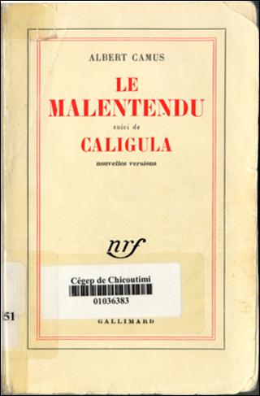

|
Albert CAMUS philosophe et écrivain français [1913-1960]
(1944)
CALIGULA
Pièce en quatre actes
Un document produit en version numérique par Jean-Marie Tremblay, bénévole, professeur de sociologie au Cégep de Chicoutimi Courriel: jean-marie_tremblay@uqac.ca Site web pédagogique : http://www.uqac.ca/jmt-sociologue/
Dans le cadre de: "Les classiques des sciences sociales" Une bibliothèque numérique fondée et dirigée par Jean-Marie Tremblay, professeur de sociologie au Cégep de
Chicoutimi
Une collection développée en collaboration avec la Bibliothèque Paul-Émile-Boulet de l'Université du Québec à Chicoutimi Site web: http://bibliotheque.uqac.ca/
|
Politique
d'utilisation
de la bibliothèque des Classiques
Toute reproduction et rediffusion de nos fichiers est interdite, même avec la mention de leur provenance, sans l’autorisation formelle, écrite, du fondateur des Classiques des sciences sociales, Jean-Marie Tremblay, sociologue.
Les fichiers des Classiques des sciences sociales ne peuvent sans autorisation formelle:
- être hébergés (en fichier ou page web, en totalité ou en partie) sur un serveur autre que celui des Classiques.
- servir de base de travail à un autre fichier modifié ensuite par tout autre moyen (couleur, police, mise en page, extraits, support, etc...),
Les fichiers (.html, .doc, .pdf, .rtf, .jpg, .gif) disponibles sur le site Les Classiques des sciences sociales sont la propriété des Classiques des sciences sociales, un organisme à but non lucratif composé exclusivement de bénévoles.
Ils sont disponibles pour une utilisation intellectuelle et personnelle et, en aucun cas, commerciale. Toute utilisation à des fins commerciales des fichiers sur ce site est strictement interdite et toute rediffusion est également strictement interdite.
L'accès à notre travail est libre et gratuit à tous les utilisateurs. C'est notre mission.
Jean-Marie Tremblay, sociologue
Fondateur et Président-directeur général,
LES CLASSIQUES DES SCIENCES SOCIALES.
REMARQUE
Ce livre est du domaine public au Canada parce qu’une œuvre passe au domaine public 50 ans après la mort de l’auteur(e).
Cette œuvre n’est pas dans le domaine public dans les pays où il faut attendre 70 ans après la mort de l’auteur(e).
Respectez la loi des droits d’auteur de votre pays.
OEUVRES D'ALBERT CAMUS
Récits-Nouvelles
L'ÉTRANGER.
LA PESTE.
LA CHUTE.
L'EXIL ET LE ROYAUME.
Essais
NOCES.
LE MYTHE DE SISYPHE.
LETTRES À UN AMI ALLEMAND.
ACTUELLES, chroniques 1944-1948.
ACTUELLES II, chroniques 1948-1953.
(Actuelles III). CHRONIQUES ALGÉRIENNES, 1939-1958.
L'HOMME RÉVOLTÉ.
L'ÉTÉ.
L'ENVERS ET L'ENDROIT.
DISCOURS DE SUÈDE.
Théâtre
LE MALENTENDU — CALIGULA.
L'ÉTAT DE SIÈGE.
LES JUSTES.
Adaptations et Traductions
LES ESPRITS, de Pierre de Larivey.
LA DÉVOTION À LA CROIX, de Pedro Calderon de la Barca.
REQUIEM POUR UNE NONNE, de William Faulkner.
LE CHEVALIER D'OLMEDO, de Lope de Vega.
LES POSSÉDÉS, d'après le roman de Dostoïevski.
Cette édition électronique a été réalisée par Jean-Marie Tremblay, bénévole, professeur de sociologie au Cégep de Chicoutimi et fondateur des Classiques des sciences sociales, à partir de :
Albert CAMUS [1913-1960]
CALIGULA. Pièce en quatre actes. [1944]
In ouvrage d’Albert Camus, LE MELENTENDU suivi de CALIGULA. Nouvelles versions, pp. 97-227. Paris : Les Éditions Gallimard, 1958, 229 pp. Collection NRF. Première édition, 1938.
Polices de caractères utilisée :
Pour le texte: Comic Sans, 12 points.
Pour les citations : Comic Sans, 12 points.
Pour les notes de bas de page : Comic Sans, 12 points.
Édition électronique réalisée avec le traitement de textes Microsoft Word 2008 pour Macintosh.
Mise en page sur papier format : LETTRE (US letter), 8.5’’ x 11’’)
Édition numérique réalisée le 2 avril 2010 à Chicoutimi, Ville de Saguenay, province de Québec, Canada.
Albert CAMUS
philosophe et écrivain français [1913-1960]
CALIGULA. Pièce en quatre actes
(1944)

In ouvrage d’Albert Camus, LE MELENTENDU suivi de CALIGULA. Nouvelles versions, pp. 97-227. Paris : Les Éditions Gallimard, 1958, 229 pp. Collection NRF. Première édition, 1938.
CALIGULA
Pièce en quatre actes
CALIGULA
a été représenté pour la première fois en 1945 sur la scène du Théâtre Hébertot (direction Jacques Hébertot), dans la mise en scène de Paul Oettly ; le décor étant de Louis Miquel et les costumes de Marie Viton.
DISTRIBUTION
CALIGULA Gérard Philipe.
CAESONIA Margo Lion.
HÉLICON Georges Vitaly.
SCIPION Michel Bouquet,
puis Georges Carmier.
CHEREA Jean Barrère.
SENECTUS, le vieux patricien Georges Saillard.
METELLUS, patricien François Darbon,
puis René Desormes.
LEPIDUS, patricien Henry Duval.
OCTAVIUS, patricien Norbert Pierlot.
PATRICIUS, l'intendant Fernand Liesse.
MEREIA Guy Favières.
MUCIUS Jacques Leduc.
PREMIER GARDE Jean Oettly.
DEUXIÈME GARDE Jean Fonteneau.
PREMIER SERVITEUR Georges Carmier,
puis Daniel Crouet.
DEUXIÈME SERVITEUR Jean-Claude Orlay.
TROISIÈME SERVITEUR Roger Saltel.
FEMME DE MUCIUS Jacqueline Hébel.
PREMIER POÈTE Georges Carmier, puis Daniel Crouet.
DEUXIÈME POÈTE Jean-Claude Orlay.
TROISIÈME POÈTE Jacques Leduc.
QUATRIÈME POÈTE François Darbon,
puis René Desormes.
CINQUIÈME POÈTE Fernand Liesse.
SIXIÈME POÈTE Roger Saltel.
La scène se passe dans le palais de Caligula.
Il y a un intervalle de trois années entre le premier acte et les actes suivants.
Acte premier
SCÈNE PREMIÈRE
Des patriciens, dont un très âgé, sont groupés dans une salle du palais et donnent des signes de nervosité.
Retour à la table des matières
PREMIER PATRICIEN
Toujours rien.
LE VIEUX PATRICIEN
Rien le matin, rien le soir.
DEUXIÈME PATRICIEN
Rien depuis trois jours.
LE VIEUX PATRICIEN
Les courriers partent, les courriers reviennent. Ils secouent la tête et disent : « Rien. »
DEUXIÈME PATRICIEN
Toute la campagne est battue. il n'y a rien à faire.
PREMIER PATRICIEN
Pourquoi s'inquiéter à l'avance ? Attendons. Il reviendra peut-être comme il est parti.
LE VIEUX PATRICIEN
Je l'ai vu sortir du palais. Il avait un regard étrange.
PREMIER PATRICIEN
J'étais là aussi et je lui ai demandé ce qu'il avait.
DEUXIÈME PATRICIEN
A-t-il répondu ?
PREMIER PATRICIEN
Un seul mot : « Rien. »
Un temps. Entre Hélicon, mangeant des oignons.
DEUXIÈME PATRICIEN,
toujours nerveux.
C'est inquiétant.
PREMIER PATRICIEN
Allons, tous les jeunes gens sont ainsi.
LE VIEUX PATRICIEN
Bien entendu, l'âge efface tout.
DEUXIÈME PATRICIEN
Vous croyez ?
PREMIER PATRICIEN
Souhaitons qu'il oublie.
LE VIEUX PATRICIEN
Bien sûr ! Une de perdue, dix de retrouvées.
HÉLICON
Où prenez-vous qu'il s'agisse d'amour ?
PREMIER PATRICIEN
Et de quoi d'autre ?
HÉLICON
Le foie peut-être. Ou le simple dégoût de vous voir tous les jours. On supporterait tellement mieux nos contemporains s'ils pouvaient de temps en temps changer de museau. Mais non, le menu ne change pas. Toujours la même fricassée.
LE VIEUX PATRICIEN
Je préfère penser qu'il s'agit d'amour. C'est plus attendrissant.
HÉLICON
Et rassurant, surtout, tellement plus rassurant.
C'est le genre de maladies qui n'épargnent ni les intelligents ni les imbéciles.
PREMIER PATRICIEN
De toutes façons, heureusement, les chagrins ne sont pas éternels. Etes-vous capable de souffrir plus d'un an ?
DEUXIÈME PATRICIEN
Moi, non.
PREMIER PATRICIEN
Personne n'a ce pouvoir.
LE VIEUX PATRICIEN
La vie serait impossible.
PREMIER PATRICIEN
Vous voyez bien. Tenez, j'ai perdu ma femme, l'an passé. J'ai beaucoup pleuré et puis j'ai oublié. De temps en temps, j'ai de la peine. Mais, en somme, ce n'est rien.
LE VIEUX PATRICIEN
La nature fait bien les choses.
HÉLICON
Quand je vous regarde, pourtant, j'ai l'impression qu'il lui arrive de manquer son coup.
Entre Cherea.
PREMIER PATRICIEN
Eh bien ?
CHEREA
Toujours rien.
HÉLICON
Du calme, Messieurs, du calme. Sauvons les, apparences. L'Empire romain, c'est nous. Si nous perdons la figure, l'Empire perd la tête. Ce n'est pas le moment, oh non ! Et pour commencer, allons déjeuner, l'Empire se portera mieux.
LE VIEUX PATRICIEN
C'est juste, il ne faut pas lâcher la proie pour l'ombre.
CHEREA
Je n'aime pas cela. Mais tout allait trop bien. Cet empereur était parfait.
DEUXIÈME PATRICIEN
Oui, il était comme il faut : scrupuleux et sans expérience.
PREMIER PATRICIEN
Mais, enfin, qu'avez-vous et pourquoi ces lamentations ? Rien ne l'empêche de continuer. Il aimait Drusilla, c'est entendu. Mais elle était sa soeur, en somme. Coucher avec elle, c'était déjà beaucoup. Mais bouleverser Rome parce qu'elle est morte, cela dépasse les bornes.
CHEREA
Il n'empêche. Je n'aime pas cela, et cette fuite ne me dit rien.
LE VIEUX PATRICIEN
Oui, il n'y a pas de fumée sans feu.
PREMIER PATRICIEN
En tout cas, la raison d'État ne peut admettre un inceste qui prend l'allure des tragédies. L'inceste, soit, mais discret.
HÉLICON
Vous savez, l'inceste, forcément, ça fait toujours un peu de bruit. Le lit craque, si j'ose m'exprimer ainsi. Qui vous dit, d'ailleurs, qu'il s'agisse de Drusilla ?
DEUXIÈME PATRICIEN
Et de quoi donc alors ?
HÉLICON
Devinez. Notez bien, le malheur c'est comme le mariage. On croit qu'on choisit et puis en est choisi. C'est comme ça, on n'y peut rien. Notre Caligula est malheureux, mais il ne sait peut-être même pas pourquoi ! Il a dû se sentir coincé, alors il a fui. Nous en aurions tous fait autant. Tenez, moi qui vous parle, si j'avais pu choisir mon père, je ne serais pas né.
Entre Scipion.
SCÈNE II
CHEREA
Alors ?
SCIPION
Encore rien. Des paysans ont cru le voir, dans la nuit d'hier, près d'ici, courant à travers l'orage.
Cherea revient vers les sénateurs. Scipion le suit.
CHEREA
Cela fait bien trois jours, Scipion ?
SCIPION
Oui. J'étais présent, le suivant comme de coutume. Il s'est avancé vers le corps de Drusilla. Il l'a touché avec deux doigts. Puis il a semblé réfléchir, tournant sur lui-même, et il est sorti d'un pas égal. Depuis, on court après lui.
CHEREA, secouant la tête.
Ce garçon aimait trop la littérature.
DEUXIÈME PATRICIEN
C'est de son âge.
CHEREA
Mais ce n'est pas de son rang. Un empereur artiste, cela n'est pas concevable. Nous en avons eu un ou deux, bien entendu. Il y a des brebis galeuses partout. Mais les autres ont eu le bon goût de rester des fonctionnaires.
PREMIER PATRICIEN
C'était plus reposant.
LE VIEUX PATRICIEN
À chacun son métier.
SCIPION
Que peut-on faire, Cherea ?
CHEREA
Rien.
DEUXIÈME PATRICIEN
Attendons. S'il ne revient pas, il faudra le remplacer. Entre nous, les empereurs ne manquent pas.
PREMIER PATRICIEN
Non, nous manquons seulement de caractères.
CHEREA
Et s'il revient mal disposé ?
PREMIER PATRICIEN
Ma foi, c'est encore un enfant, nous lui ferons entendre raison.
CHEREA
Et s'il est sourd au raisonnement ?
PREMIER PATRICIEN, il rit.
Eh bien ! n'ai-je pas écrit, dans le temps, un traité du Coup d'État ?
CHEREA
Bien sûr, s'il le fallait ! Mais j'aimerais mieux qu'on me laisse à mes livres.
SCIPION
Je vous demande pardon.
Il sort.
CHEREA
Il est offusqué.
LE VIEUX PATRICIEN
C'est un enfant. Les jeunes gens sont solidaires.
HÉLICON
Solidaires ou non, ils vieilliront de toutes façons.
Un garde apparaît : « On a vu Caligula dans le jardin du palais. » Tous sortent.
SCÈNE III
La scène reste vide quelques secondes. Caligula entre furtivement par la gauche. Il a l'air égaré, il est sale, il a les cheveux pleins d'eau et les jambes souillées. Il porte plusieurs fois la main à sa bouche. Il avance vers le miroir et s'arrête dès qu'il aperçoit sa propre image. Il grommelle des paroles indistinctes, puis va s'asseoir, à droite, les bras pendants entre les genoux écartés. Hélicon entre à gauche. Apercevant Caligula, il s'arrête à l'extrémité de la scène et l'observe en silence. Caligula se retourne et le voit. Un temps.
SCÈNE IV
HÉLICON, d'un bout de la scène à l'autre.
Bonjour, Caïus.
CALIGULA, avec naturel.
Bonjour, Hélicon.
Silence.
HÉLICON
Tu sembles fatigué ?
CALIGULA
J'ai beaucoup marché.
HÉLICON
Oui, ton absence a duré longtemps.
Silence.
CALIGULA
C'était difficile à trouver.
HÉLICON
Quoi donc ?
CALIGULA
Ce que je voulais.
HÉLICON
Et que voulais-tu ?
CALIGULA, toujours naturel.
La lune.
HÉLICON
Quoi ?
CALIGULA
Oui, je voulais la lune.
HÉLICON
Ah !
Silence. Hélicon se rapproche.
Pour quoi faire ?
CALIGULA
Eh bien !... C'est une des choses que je n'ai pas.
HÉLICON
Bien sûr. Et maintenant, tout est arrangé ?
CALIGULA
Non, je n'ai pas pu l'avoir.
HÉLICON
C'est ennuyeux.
CALIGULA
Oui, c'est pour cela que je suis fatigué.
Un temps.
CALIGULA
Hélicon !
HÉLICON
Oui, Caïus.
CALIGULA
Tu penses que je suis fou.
HÉLICON
Tu sais bien que je ne pense jamais. Je suis bien trop intelligent pour ça.
CALIGULA
Oui. Enfin ! Mais je ne suis pas fou et même je n'ai jamais été aussi raisonnable. Simplement, je me suis senti tout d'un coup un besoin d'impossible. (Un temps.) Les choses, telles qu'elles sont, ne me semblent pas satisfaisantes.
HÉLICON
C'est une opinion assez répandue.
CALIGULA
Il est vrai. Mais je ne le savais pas auparavant. Maintenant, je sais. (Toujours naturel.) Ce monde, tel qu'il est fait, n'est pas supportable. J'ai donc besoin de la lune, ou du bonheur, ou de l'immortalité, de quelque chose qui soit dément peut-être, mais qui ne soit pas de ce monde.
HÉLICON
C'est un raisonnement qui se tient. Mais, en général, on ne peut pas le tenir jusqu'au bout.
CALIGULA, se levant,
mais avec la même simplicité.
Tu n'en sais rien. C'est parce qu'on ne le tient jamais jusqu'au bout que rien n'est obtenu. Mais il suffit peut-être de rester logique jusqu'à la fin.
Il regarde Hélicon.
Je sais aussi ce que tu penses. Que d'histoires pour la mort d'une femme ! Non, ce n'est pas cela. Je crois me souvenir, il est vrai, qu'il y a quelques jours, une femme que j'aimais est morte. Mais qu'est-ce que l'amour ? Peu de chose. Cette mort n'est rien, je te le jure ; elle est seulement le signe d'une vérité qui me rend la lune nécessaire. C'est une vérité toute simple et toute claire, un peu bête, mais difficile à découvrir et lourde à porter.
HÉLICON
Et qu'est-ce donc que cette vérité, Caïus ?
CALIGULA, détourné,
sur un ton neutre.
Les hommes meurent et ils ne sont pas heureux.
HÉLICON, après un temps.
Allons, Caïus, c'est une vérité dont on s'arrange très bien. Regarde autour de toi. Ce n'est pas cela qui les empêche de déjeuner.
CALIGULA, avec un éclat soudain.
Alors, c'est que tout, autour de moi, est mensonge, et moi, je veux qu'on vive dans la vérité 1 Et justement, j'ai les moyens de les faire vivre dan& la vérité. Car je sais ce qui leur manque, Hélicon. Ils sont privés de la connaissance et il leur manque un professeur qui sache ce dont il parle.
HÉLICON
Ne t'offense pas, Caïus, de ce que je vais te dire. Mais tu devrais d'abord te reposer.
CALIGULA, s'asseyant et avec douceur.
Cela n'est pas possible, Hélicon, cela ne sera plus jamais possible.
HÉLICON
Et pourquoi donc ?
CALIGULA
Si je dors, qui me donnera la lune ?
HÉLICON, après un silence.
Cela est vrai.
Caligula se lève avec un effort visible.
CALIGULA
Écoute, Hélicon. J'entends des pas et des bruits de voix. Garde le silence et oublie que tu viens de me voir.
HÉLICON
J'ai compris.
Caligula se dirige vers la sortie. Il se retourne.
CALIGULA
Et, s'il te plaît, aide-moi désormais.
HÉLICON
Je n'ai pas de raisons de ne pas le faire, Caïus. Mais je sais beaucoup de choses et peu de choses m'intéressent. À quoi donc puis-je t'aider ?
CALIGULA
À l'impossible.
HÉLICON
Je ferai pour le mieux.
Caligula sort. Entrent rapidement Scipion et Caesonia.
SCÈNE V
SCIPION
Il n'y a personne. Ne l'as-tu pas vu, Hélicon ?
HÉLICON
Non.
CAESONIA
Hélicon, ne t'a-t-il vraiment rien dit avant de s'échapper ?
HÉLICON
Je ne suis pas son confident, je suis son spectateur. C'est plus sage.
CAESONIA
Je t'en prie.
HÉLICON
Chère Caesonia, Caïus est un idéaliste, tout le monde le sait. Autant dire qu'il n'a pas encore compris. Moi oui, c'est pourquoi je ne m'occupe de rien. Mais si Caïus se met à comprendre, il est capable au contraire, avec son bon petit coeur, de s'occuper de tout. Et Dieu sait ce que ça nous coûtera. Mais, vous permettez, le déjeuner
Il sort.
SCÈNE VI
Caesonia s'assied avec lassitude.
CAESONIA
Un garde l'a vu passer. Mais Rome tout entière voit Caligula partout. Et Caligula, en effet, ne voit que son idée.
SCIPION
Quelle idée ?
CAESONIA
Comment le saurais-je, Scipion ?
SCIPION
Drusilla ?
CAESONIA
Qui peut le dire ? Mais il est vrai qu'il l'aimait. Il est vrai que cela est dur de voir mourir aujourd'hui ce que, hier, on serrait dans ses bras.
SCIPION, timidement.
Et toi ?
CAESONIA
Oh ! moi, je suis la vieille maîtresse.
SCIPION
Caesonia, il faut le sauver.
CAESONIA
Tu l'aimes donc ?
SCIPION
Je l'aime. Il était bon pour moi. Il m'encourageait et je sais par cœur certaines de ses paroles. Il me disait que la vie n'est pas facile, mais qu'il y avait la religion. J'art, l'amour qu'on nous porte, Il répétait souvent que faire souffrir était la seule façon de se tromper. Il voulait être un homme juste.
CAESONIA, se levant.
C'était un enfant.
Elle va vers le miroir et s'y contemple.
Je n'ai jamais eu d'autre dieu que mon corps, et c'est ce dieu que je voudrais prier aujourd'hui pour que Caïus me soit rendu.
Entre Caligula. Apercevant Caesonia et Scipion, il hésite et recule. Au même instant entrent à l'opposé les patriciens et l'intendant du palais. Ils s'arrêtent, interdits. Caesonia se retourne. Elle et Scipion courent vers Caligula. Il les arrête d'un geste.
SCÈNE VII
L'INTENDANT, d'une voix mal assurée.
Nous... nous te cherchions, César.
CALIGULA, d'une voix brève et changée.
Je vois.
L'INTENDANT
Nous... c'est-à-dire...
CALIGULA, brutalement.
Qu'est-ce que vous voulez ?
L'INTENDANT
Nous étions inquiets, César.
CALIGULA, s'avançant vers lui.
De quel droit ?
L'INTENDANT
Eh ! heu... (Soudain inspiré et très vite.) Enfin, de toutes façons, tu sais que tu as à régler quelques questions concernant le Trésor public.
CALIGULA, pris d'un rire inextinguible.
Le Trésor ? Mais c'est vrai, voyons, le Trésor, c'est capital.
L91NTENDANT
Certes, César.
CALIGULA, toujours riant, à Caesonia.
N'est-ce pas, ma chère, c'est très important, le Trésor ?
CAESONIA
Non, Caligula, c'est une question secondaire.
CALIGULA
Mais c'est que tu n'y connais rien. Le Trésor est d'un intérêt puissant. Tout est important : les finances, la moralité publique, la politique extérieure, l'approvisionnement de l'armée et les lois agraires ! Tout est capital, te dis-je. Tout est sur le même pied : la grandeur de Rome et tes crises d'arthritisme. Ah ! je vais m'occuper de tout cela. Écoute-moi un peu, intendant.
L'INTENDANT
Nous t'écoutons.
Les patriciens s'avancent.
CALIGULA
Tu m'es fidèle, n'est-ce pas ?
L'INTENDANT, d'un ton de reproche.
César !
CALIGULA
Eh bien, j'ai un plan à te soumettre. Nous allons bouleverser l'économie politique en deux temps. Je te l'expliquerai, intendant... quand les patriciens seront sortis.
Les patriciens sortent.
SCÈNE VIII
Caligula s'assied près de Caesonia.
CALIGULA
Écoute bien. Premier temps : tous les patriciens, toutes les personnes de l'Empire qui disposent de quelque fortune - petite ou grande, c'est exactement la même chose - doivent obligatoirement déshériter leurs enfants et tester sur l'heure en faveur de l'État.
L'INTENDANT
Mais, César...
CALIGULA
Je ne t'ai pas encore donné la parole. À raison de nos besoins, nous ferons mourir ces personnages dans l'ordre d'une liste établie arbitrairement. A l'occasion, nous pourrons modifier cet ordre, toujours arbitrairement. Et nous hériterons.
CAESONIA, se dégageant.
Qu'est-ce qui te prend ?
CALIGULA, imperturbable.
L'ordre des exécutions n'a, en effet, aucune importance. Ou plutôt ces exécutions ont une importance égale, ce qui entraîne qu'elles n'en ont point. D'ailleurs, ils sont aussi coupables les uns que les autres. Notez d'ailleurs qu'il n'est pas plus immoral de voler directement les citoyens que de glisser des taxes indirectes dans le prix de denrées dont ils ne peuvent se passer. Gouverner, c'est voler, tout le monde sait ça. Mais il y a la manière. Pour moi, je volerai franchement. Ça vous changera des gagne-petit. (Rudement, à l'intendant.) Tu exécuteras ces ordres sans délai. Les testaments seront signés dans la soirée par tous les habitants de Rome, dans un mois au plus tard par tous les provinciaux. Envoie des courriers.
L'INTENDANT
César, tu ne te rends pas compte...
CALIGULA
Écoute-moi bien, imbécile. Si le Trésor a de l'importance, alors la vie humaine n'en a pas. Cela est clair. Tous ceux qui pensent comme toi doivent admettre ce raisonnement et compter leur vie pour rien puisqu'ils tiennent l'argent pour tout. Au demeurant, moi, j'ai décidé d'être logique et puisque j'ai le pouvoir, vous allez voir ce que la logique va vous coûter. J'exterminerai les contradicteurs et les contradictions. S'il le faut, je commencerai par toi.
L'INTENDANT
César, ma bonne volonté n'est pas en question, je te le jure.
CALIGULA
Ni la mienne, tu peux m'en croire. La preuve, c'est que je consens à épouser ton point de vue et à tenir le Trésor publie pour un objet de méditations. En somme, remercie-moi, puisque je rentre dans ton jeu et que je joue avec tes cartes. (Un temps et avec calme.) D'ailleurs, mon plan, par sa simplicité, est génial, ce qui clôt le débat. Tu as trois secondes pour disparaître. Je compte : un...
L'intendant disparaît.
SCÈNE IX
CAESONIA
Je te reconnais mal ! C'est une plaisanterie, n'est-ce pas ?
CALIGULA
Pas exactement, Caesonia. C'est de la pédagogie.
SCIPION
Ce n'est pas possible, Caïus !
CALIGULA
Justement !
SCIPION
Je ne te comprends pas.
CALIGULA
Justement ! il s'agit de ce qui n'est pas possible, ou plutôt il s'agit de rendre possible ce qui ne l'est pas.
SCIPION
Mais c'est un jeu qui n'a pas de limites. C'est la récréation d'un fou.
CALIGULA
Non, Scipion, c'est la vertu d'un empereur. (Il se renverse avec une expression de fatigue.) Je viens de comprendre enfin l'utilité du pouvoir. Il donne ses chances à l'impossible. Aujourd'hui, et pour tout le temps qui va venir, ma liberté n'a plus de frontières.
CAESONIA, tristement.
Je ne sais pas s'il faut s'en réjouir, Caïus.
CALIGULA
Je ne le sais pas non plus. Mais je suppose qu'il faut en vivre.
Entre Cherea.
SCÈNE X
CHEREA
J'ai appris ton retour. Je fais des voeux pour ta santé.
CALIGULA
Ma santé te remercie. (Un temps et soudain.) Va-t'en, Cherea, je ne veux pas te voir.
CHEREA
Je suis surpris, Caïus.
CALIGULA
Ne sois pas surpris. Je n'aime pas les littérateurs et je ne peux supporter leurs mensonges. Ils parlent pour ne pas s'écouter. S'ils s'écoutaient, ils sauraient qu'ils ne sont rien et ne pourraient plus parler. Allez, rompez, j'ai horreur des faux témoins.
CHEREA
Si nous mentons, c'est souvent sans le savoir. je plaide non coupable.
CALIGULA
Le mensonge n'est jamais innocent. Et le vôtre donne de l'importance aux êtres et aux choses. Voilà ce que je ne puis vous pardonner.
CHEREA
Et pourtant, il faut bien plaider pour ce monde, si nous voulons y vivre.
CALIGULA
Ne plaide pas, la cause est entendue. Ce monde est sans importance et qui le reconnaît conquiert si ! liberté. (Il s'est levé.) Et justement, je vous hais parce que vous n'êtes pas libres. Dans tout l'Empire romain, me voici seul libre. Réjouissez-vous, il vous est enfin venu un empereur pour vous enseigner la liberté. Va-t'en, Cherea, et toi aussi, Scipion, l'amitié me fait rire. Allez annoncer à Rome que sa liberté lui est enfin rendue et qu'avec elle commence une grande épreuve.
Ils sortent. Caligula s'est détourné.
SCÈNE XI
CAESONIA
Tu pleures ?
CALIGULA
Oui, Caesonia.
CAESONIA
Mais enfin, qu'y a-t-il de changé ? S'il est vrai que tu aimais Drusilla, tu l'aimais en même temps que moi et que beaucoup d'autres. Cela ne suffi. sait pas pour que sa mort te chasse trois jours et trois nuits dans la campagne et te ramène avec ce visage ennemi.
CALIGULA, il s'est retourné.
Qui te parle de Drusilla, folle ? Et ne peux-tu imaginer qu'un homme pleure pour autre chose que l'amour ?
CAESONIA
Pardon, Caïus. Mais je cherche à comprendre.
CALIGULA
Les hommes pleurent parce que les choses ne sont pas ce qu'elles devraient être. (Elle va vers lui.) Laisse, Caesonia. (Elle recule.) Mais reste près de moi.
CAESONIA
Je ferai ce que tu voudras. (Elle s'assied.) À mon âge, on sait que la vie n'est pas bonne. Mais si le mal est sur la terre, pourquoi vouloir y ajouter ?
CALIGULA
Tu ne peux pas comprendre. Qu'importe ? Je sortirai peut-être de là. Mais je sens monter en moi des êtres sans nom. Que ferais-je contre eux ? (Il se retourne vers elle.) Oh ! Caesonia, je savais qu'on pouvait être désespère, mais j'ignorais ce que ce mot voulait dire. Je croyais comme tout le monde que c'était une maladie de l'âme. Mais non, c'est le corps qui souffre. Ma peau me fait mal, ma poitrine, mes membres. J'ai la tête creuse et le coeur soulevé. Et le plus affreux, c'est ce goût dans la bouche. Ni sang, ni mort, ni fièvre, mais tout cela à la fois. Il suffit que je remue la langue pour que tout redevienne noir et que les êtres me répugnent. Qu'il est dur, qu'il est amer de devenir un homme !
CAESONIA
Il faut dormir, dormir longtemps, se laisser aller et ne plus réfléchir. Je veillerai sur ton sommeil. À ton réveil, le monde pour toi recouvrera son goût. Fais servir alors ton pouvoir à mieux aimer ce qui peut l'être encore. Ce qui est possible mérite aussi d'avoir sa chance.
CALIGULA
Mais il y faut le sommeil, il y faut l'abandon. Cela n'est pas possible.
CAESONIA
C'est ce qu'on croit au bout de la fatigue. Un temps vient où l'on retrouve une main ferme.
CALIGULA
Mais il faut savoir où la poser. Et que me fait une main ferme, de quoi me sert ce pouvoir si étonnant si je ne puis changer l'ordre des choses, si je ne puis faire que le soleil se couche à l'est, que la souffrance décroisse et que les êtres ne meurent plus ? Non, Caesonia, il est indifférent de dormir ou de rester éveillé, si je n'ai pas d'action sur l'ordre de ce monde.
CAESONIA
Mais c'est vouloir s'égaler aux dieux. Je ne connais pas de pire folie.
CALIGULA
Toi aussi, tu me crois fou. Et pourtant, qu'est-ce qu'un dieu pour que je désire m'égaler à lui ? Ce que je désire de toutes mes forces, aujourd'hui, est au-dessus des dieux. Je prends en charge un royaume où l'impossible est roi.
CAESONIA
Tu ne pourras pas faire que le ciel ne soit pas le ciel, qu'un beau visage devienne laid, un cœur d'homme insensible.
CALIGULA, avec une exaltation
croissante.
Je veux mêler le ciel à la mer, confondre laideur et beauté, faire jaillir le rire de la souffrance.
CSESONIA, dressée
devant lui et suppliante.
Il y a le bon et le mauvais, ce qui est grand et ce qui est bas, le juste et l'injuste. Je te jure que tout cela ne changera pas.
CALIGULA, de même.
Ma volonté est de le changer. Je ferai à ce siècle le don de l'égalité. Et lorsque tout sera aplani, l'impossible enfin sur terre, la lune dans mes mains, alors, peut-être, moi-même je serai transformé et le monde avec moi, alors enfin les hommes ne mourront pas et ils seront heureux.
CAESONIA, dans un cri.
Tu ne pourras pas nier l'amour.
CALIGULA, éclatant
et avec une voix pleine de rage.
L'amour, Caesonia ! (Il l'a prise aux épaules et la secoue.) J'ai appris que ce n'était rien. C'est l'autre qui a raison : le Trésor publie ! Tu l'as bien entendu, n'est-ce pas ? Tout commence avec cela. Ah, c'est maintenant que je vais vivre enfin ! Vivre, Caesonia, vivre, c'est le contraire d'aimer. C'est moi qui te le dis et c'est moi qui t'invite à une fête sans mesure, à un procès général, au plus beau des spectacles. Et il me faut du monde, des spectateurs, des victimes et des coupables.
Il saute sur le gong et commence à frapper, sans arrêt, à coups redoublés.
Toujours frappant.
Faites entrer les coupables. Il me faut des coupables. Et ils le sont tous. (Frappant toujours.) Je veux qu'on fasse entrer les condamnés à mort. Du publie, je veux avoir mon publie Juges, témoins, accusés, tous condamnés d'avance Ah ! Caesonia, je leur montrerai ce qu'ils n'ont jamais vu, le seul homme libre de cet empire !
Au son dit gong, le palais peu à peu s'est rempli de rumeurs qui grossissent et approchent. Des voix, des bruits d'armes, des pas et des piétinements. Caligula rit et frappe toujours. Des gardes entrent, puis sortent. Frappant.
Et toi, Caesonia, tu m'obéiras. Tu m'aideras toujours. Ce sera merveilleux. Jure de m'aider, Caesonia.
CSESONIA, égarée, entre deux coups de gong.
Je n'ai pas besoin de jurer, puisque je t'aime.
CALIGULA, même jeu.
Tu feras tout ce que je te dirai.
CAESONIA, même jeu.
Tout, Caligula, mais arrête.
CALIGULA, toujours frappant.
Tu seras cruelle.
CAESONIA, pleurant.
Cruelle.
CALIGULA, Même jeu.
Froide et implacable.
CAESONIA
Implacable.
CALIGULA, Même jeu.
Tu souffriras aussi.
CAESONIA
Oui, Caligula, mais je deviens folle.
Des patriciens sont entrés, ahuris, et avec eux les gens du palais. Caligula frappe un dernier coup, lève son maillet, se retourne vers eux et les appelle.
CALIGULA, insensé.
Venez tous. Approchez, Je vous ordonne d'approcher. (Il trépigne.) C'est un empereur qui exige que vous approchiez. (Tous avancent, pleins d'effroi.) Venez vite. Et maintenant, approche, Caesonia.
Il la prend par la main, la mène près du miroir et, du maillet, efface frénétiquement une image sur la surface polie. Il rit.
Plus rien, tu vois. Plus de souvenirs, tous les visages enfuis ! Rien, plus rien. Et sais-tu ce qui reste ? Approche encore. Regarde. Approchez. Regardez.
Il se campe devant la glace dans une attitude démente.
CAESONIA, regardant le miroir, avec effroi.
Caligula !
Caligula change de ton, pose son doigt sur la glace et, le regard soudain fixe, dit d'une voix triomphante :
CALIGULA
Caligula.
Rideau.
Acte deuxième
SCÈNE PREMIÈRE
Des patriciens sont réunis chez Cherea.
Retour à la table des matières
PREMIER PATRICIEN
Il insulte notre dignité.
MUCIUS
Depuis trois ans !
LE VIEUX PATRICIEN
Il m'appelle petite femme ! Il me ridiculise ! À mort !
MUCIUS
Depuis trois ans !
PREMIER PATRICIEN
Il nous fait courir tous les soirs autour de sa litière quand il va se promener dans la campagne !
DEUXIÈME PATRICIEN
Et il nous dit que la course est bonne pour la santé.
MUCIUS
Depuis trois ans !
LE VIEUX PATRICIEN
Il n'y a pas d'excuse à cela.
TROISIÈME PATRICIEN
Non, on ne peut pardonner cela.
PREMIER PATRICIEN
Patricius, il a confisqué tes biens ; Scipion, il a tué ton père ; Octavius, il a enlevé ta femme et la fait travailler maintenant dans sa maison publique ; Lépidus, il a tué ton fils. Allez-vous supporter cela ? Pour moi, mon choix est fait. Entre le risque à courir et cette vie insupportable dans la peur et l'impuissance, je ne peux pas hésiter.
SCIPION
En tuant mon père, il a choisi pour moi.
PREMIER PATRICIEN
Hésiterez-vous encore ?
TROISIÈME PATRICIEN
Nous sommes avec toi. Il a donné au peuple nos places de cirque et nous a poussés à nous battre avec la plèbe pour mieux nous punir ensuite.
LE VIEUX PATRICIEN
C'est un lâche.
DEUXIÈME PATRICIEN
Un cynique.
TROISIÈME PATRICIEN
Un comédien.
LE VIEUX PATRICIEN
C'est un impuissant.
QUATRIÈME PATRICIEN
Depuis trois ans !
Tumulte désordonné. Des armes sont brandies. Un flambeau tombe. Une table est renversée. Tout le monde se précipite vers la sortie. Mais entre Cherea, impassible, qui arrête cet élan.
SCÈNE II
CHEREA
Où courez-vous ainsi ?
TROISIÈME PATRICIEN
Au palais.
CHEREA
J'ai bien compris. Mais croyez-vous qu'on vous laissera entrer ?
PREMIER PATRICIEN
Il ne s'agit pas de demander la permission.
CHEREA
Vous voilà bien vigoureux tout d'un coup ! Puis-je au moins avoir l'autorisation de m'asseoir chez moi ?
On ferme la porte. Cherea marche vers la table renversée et s'assied sur un des coins, tandis que tous se retournent vers lui.
CHEREA
Ce n'est pas aussi facile que vous le croyez, mes amis. La peur que vous éprouvez ne peut pas vous tenir lieu de courage et de sang-froid. Tout cela est prématuré.
TROISIÈME PATRICIEN
Si tu n'es pas avec nous, va-t'en, mais tiens ta langue.
CHEREA
Je crois pourtant que je suis avec vous. Mais ce n'est pas pour les mêmes raisons.
TROISIÈME PATRICIEN
Assez de bavardages !
CHEREA, se redressant.
Oui, assez de bavardages. Je veux que les choses soient claires. Car si je suis avec vous, je ne suis pas pour vous. C'est pourquoi votre méthode ne me paraît pas bonne. Vous n'avez pas reconnu votre véritable ennemi, vous lui prêtez de petits motifs. Il n'en a que de grands et vous courez à votre perte. Sachez d'abord le voir comme il est, vous pourrez mieux le combattre.
TROISIÈME PATRICIEN
Nous le voyons comme il est, le plus insensé des tyrans !
CHEREA
Ce n'est pas sûr. Les empereurs fous, nous connaissons cela. Mais celui-ci n'est pas assez fou. Et ce que je déteste en lui, c'est qu'il sait ce qu'il veut.
PREMIER PATRICIEN
Il veut notre mort à tous.
CHEREA
Non, car cela est secondaire. Mais il met son pouvoir au service d'une passion plus haute et plus mortelle, il nous menace dans ce que nous avons de plus profond. Sans doute, ce n'est pas la première fois que, chez nous, un homme dis. pose d'un pouvoir sans limites, mais c'est la première fois qu'il s'en sert sans limites, jusqu'à nier l'homme et le monde. Voilà ce qui m'effraye en lui et que je veux combattre. Perdre la vie est peu de chose et j'aurai ce courage quand il le faudra. Mais voir se dissiper le sens de cette vie, disparaître notre raison d'exister, voilà ce qui est insupportable. On ne peut vivre sans raison.
PREMIER PATRICIEN
La vengeance est une raison.
CHEREA
Oui, et je vais la partager avec vous. Mais comprenez que ce n'est pas pour prendre le parti de vos petites humiliations. C'est pour lutter contre une grande idée dont la victoire signifierait la fin du monde. Je puis admettre que vous soyez tournés en dérision, je ne puis accepter que Caligula fasse ce qu'il rêve de faire et tout ce qu'il rêve de faire. Il transforme sa philosophie en cadavres et, pour notre malheur, c'est une philosophie sans objections. Il faut bien frapper quand on ne peut réfuter.
TROISIÈME PATRICIEN
Alors, il faut agir.
CHEREA
Il faut agir. Mais vous ne détruirez pas cette puissance injuste en l'abordant de front, alors qu'elle est en pleine vigueur. On petit combattre la tyrannie, il faut ruser avec la méchanceté désintéressée. Il faut la pousser dans son sens, attendre que cette logique soit devenue démence. Mais encore une fois, et je n'ai parlé ici que par honnêteté, comprenez que je ne suis avec vous que pour un temps. Je ne servirai ensuite aucun de vos intérêts, désireux seulement de retrouver la paix dans un monde à nouveau cohérent. Ce n'est pas l'ambition qui me fait agir, mais une peur raisonnable, la peur de ce lyrisme inhumain auprès de quoi ma vie n'est rien.
PREMIER PATRICIEN, s'avançant.
Je crois que j'ai compris, ou à peu près. Mais l'essentiel est que tu juges comme nous que les bases de notre société sont ébranlées. Pour nous, n'est-ce pas, vous autres, la question est avant tout morale. La famille tremble, le respect (lu travail se perd, la patrie tout entière est livrée au blasphème. La vertu nous appelle à son secours, allons-nous refuser de l'entendre ? Conjurés, accepterez-vous enfin que les patriciens soient contraints chaque soir de courir autour de la litière, de César ?
LE VIEUX PATRICIEN
Permettrez-vous qu'on les appelle « Ma chérie » ?
TROISIÈME PATRICIEN
Qu'on leur enlève leur femme.
DEUXIÈME PATRICIEN
Et leurs enfants.
MUCIUS
Et leur argent ?
CINQUIÈME PATRICIEN
Non !
PREMIER PATRICIEN
Cherea, tu as bien parlé. Tu as bien fait aussi de nous calmer. Il est trop tôt pour agir : le peuple, aujourd'hui encore, serait contre nous. Veux-tu guetter avec nous le moment de conclure ?
CHEREA
Oui, laissons continuer Caligula. Poussons-le dans cette voie, au, contraire. Organisons sa folie. Un jour viendra où il sera seul devant un empire plein de morts et de parents de morts.
Clameur générale. Trompettes au dehors. Silence. Puis, de bouche en bouche un nom : Caligula.
SCÈNE III
Entrent Caligula et Caesonia, suivis d'Hélicon et de soldats. Scène muette. Caligula s'arrête et regarde les conjurés. Il va de l'un à l'autre en silence, arrange une boucle à l'un, recule pour contempler un second, les regarde encore, passe la main sur ses yeux et sort, sans dire un mot.
SCÈNE IV
CAESONIA, ironique, montrant le désordre.
Vous vous battiez ?
CHEREA
Nous nous battions.
CAESONIA, même jeu.
Et pourquoi vous battiez-vous ?
CHEREA
Nous nous battions pour rien.
CAESONIA
Alors, ce n'est pas vrai.
CHEREA
Qu'est-ce qui n'est pas vrai ?
CAESONIA
Vous ne vous battiez pas.
CHEREA
Alors, nous ne nous battions pas.
CAESONIA, souriante.
Peut-être vaudrait-il mieux mettre la pièce en ordre. Caligula a horreur du désordre.
HÉLICON, au vieux patricien.
Vous finirez par le faire sortir de son caractère, cet homme !
LE VIEUX PATRICIEN
Mais enfin, que lui avons-nous fait ?
HÉLICON
Rien, justement. C'est inouï d'être insignifiant à ce point. Cela finit par devenir insupportable. Mettez-vous à la place de Caligula. (Un temps.) Naturellement, vous complotiez bien un peu, n'est-ce pas ?
LE VIEUX PATRICIEN
Mais c'est faux, voyons. Que croit-il donc ?
HÉLICON
Il ne croit pas, il le sait. Mais je suppose qu'au fond, il le désire un peu. Allons, aidons à réparer le désordre.
On s'affaire. Caligula entre et observe.
SCÈNE V
CALIGULA, au vieux patricien.
Bonjour, ma chérie. (Aux autres.) Cherea, j'ai décidé de me restaurer chez toi. Mucius, je me suis permis d'inviter ta femme.
L'intendant frappe dans ses mains. Un esclave entre, mais Caligula l'arrête.
Un instant ! Messieurs, vous savez que les finances de l'État ne tenaient debout que parce qu'elles en avaient pris l'habitude. Depuis hier, l'habitude elle-même n'y suffit plus. Je suis donc dans la désolante nécessité de procéder à des compressions de personnel. Dans un esprit de sacrifice que vous apprécierez, j'en suis sûr, j'ai décidé de réduire mon train de maison, de libérer quelques esclaves, et de vous affecter à mon service. Vous voudrez bien préparer la table et la servir.
Les sénateurs se regardent et hésitent.
HÉLICON
Allons, Messieurs, un peu de bonne volonté. Vous verrez, d'ailleurs, qu'il est plus facile de descendre l'échelle sociale que de la remonter.
Les sénateurs se déplacent avec hésitation.
CALIGULA, à Caesonia.
Quel est le châtiment réservé aux esclaves paresseux ?
CAESONIA
Le fouet, je crois.
Les sénateurs se précipitent et commencent d'installer la table maladroitement.
CALIGULA
Allons, un peu d'application ! De la méthode, surtout, de la méthode ! (À Hélicon.) Ils ont perdu la main, il me semble ?
HÉLICON
À vrai dire, ils ne l'ont jamais eue, sinon pour frapper ou commander. Il faudra patienter, voilà tout. Il faut un jour pour faire un sénateur et dix ans pour faire un travailleur.
CALIGULA
Mais j'ai bien peur qu'il en faille vingt pour faire un travailleur d'un sénateur.
HÉLICON
Tout de même, ils y arrivent. À mon avis, ils ont la vocation ! La servitude leur conviendra. (Un sénateur s'éponge.) Regarde, ils commencent même à transpirer. C'est une étape.
CALIGULA
Bon. N'en demandons pas trop. Ce n'est pas si mal. Et puis, un instant de justice, c'est toujours bon à prendre. À propos de justice, il faut nous dépêcher : une exécution m'attend. Ah ! Rufius a de la chance que je sois si prompt à avoir faim. (Confidentiel.) Rufius, c'est le chevalier qui doit mourir. (Un temps.) Vous ne me demandez pas pourquoi il doit mourir ?
Silence général. Pendant ce temps, des esclaves ont apporté des vivres.
De bonne humeur.
Allons, je vois que vous devenez intelligents. (Il grignote une olive.) Vous avez fini par comprendre qu'il n'est pas nécessaire d'avoir fait quelque chose pour mourir. Soldats, je suis content de vous. N'est-ce pas, Hélicon ?
Il s'arrête de grignoter et regarde les convives d'un air farceur.
HÉLICON
Sûr ! Quelle armée ! Mais si tu veux mon avis, ils sont maintenant trop intelligents, et ils ne voudront plus se battre. S'ils progressent encore, l'empire s'écroule !
CALIGULA
Parfait. Nous nous reposerons. Voyons, plaçons-nous au hasard. Pas de protocole. Tout de même, ce Rufius a de la chance. Et je suis, sûr qu'il n'apprécie pas ce petit répit. Pourtant, quelques heures gagnées sur la mort, c'est inestimable.
Il mange, les autres aussi. Il devient évident que Caligula se tient mal à table. Rien ne le force à jeter ses noyaux d'olives dans l'assiette de ses voisins immédiats, à cracher ses déchets de viande sur le plat, comme à se curer les dents avec les ongles et à se gratter la tête frénétiquement. C'est pourtant autant d'exploits que, pendant le repas, il exécutera avec simplicité. Mais il s'arrête brusquement de manger et fixe l'un des convives, Lepidus, avec insistance. Brutalement.
Tu as l'air de mauvaise humeur. Serait-ce parce que j'ai fait mourir ton fils ?
LEPIDUS, la gorge serrée.
Mais non, Caïus, au contraire.
CALIGULA, épanoui.
Au contraire ! Ah ! que j'aime que le visage démente les soucis du coeur. Ton visage est triste. Mais ton coeur ? Au contraire, n'est-ce pas, Lepidus ?
LEPIDUS, résolument.
Au contraire, César.
CALIGULA, de plus en plus heureux.
Ah ! Lepidus, personne ne m'est plus cher que toi. Rions ensemble, veux-tu ? Et dis-moi quelque bonne histoire.
LEPIDUS, qui a présumé de ses forces.
Caïus !
CALIGULA
Bon, bon. Je raconterai, alors. Mais tu riras, n'est-ce pas, Lepidus ? (L'œil mauvais.) Ne serait-ce que pour ton second fils. (De nouveau rieur.) D'ailleurs, tu n'es pas de mauvaise humeur. (Il boit, puis dictant.) Au..., au... Allons, Lepidus.
LEPIDUS, avec lassitude.
Au contraire, Caïus.
CALIGULA
À la bonne heure. (Il boit.) Écoute, maintenant. (Rêveur.) Il était une fois un pauvre empereur que personne n'aimait. Lui, qui aimait Lepidus, fit tuer son plus jeune fils pour s'enlever cet amour du cœur. (Changeant de ton.) Naturellement, ce n'est pas vrai. Drôle, n'est-ce pas ? Tu ne ris pas. Personne ne rit ? Écoutez alors. (Avec une violente colère.) Je veux que tout le monde rie. Toi, Lepidus, et tous les autres. Levez-vous, riez. (Il frappe sur la table.) Je veux, vous entendez, je veux vous voir rire.
Tout le monde se lève. Pendant toute cette scène, les acteurs, sauf Caligula et Caesonia, pourront jouer comme des marionnettes.
Se renversant sur son lit, épanoui, pris d'un rire irrésistible.
Non, mais regarde-les, Caesonia. Rien ne va plus. Honnêteté, respectabilité, qu'en dira-t-on, sagesse des nations, rien ne veut plus rien dire. Tout disparaît devant la peur. La peur, hein, Caesonia, ce beau sentiment, sans alliage, pur et désintéressé, un des rares qui tire sa noblesse du ventre. (Il passe la main sur son front et boit. Sur un ton amical.) Parlons d'autre chose, maintenant. Voyons, Cherea, tu es bien silencieux.
CHEREA
Je suis prêt à parler, Caïus. Dès que tu le permettras.
CALIGULA
Parfait. Alors, tais-toi. J'aimerais bien entendre notre ami Mucius.
MUCIUS, à contrecoeur.
À tes ordres, Caïus.
CALIGULA
Eh bien, parle-nous de ta femme. Et commence par l'envoyer à ma gauche.
La femme de Mucius vient près de Caligula.
Eh bien ! Mucius, nous t'attendons.
MUCIUS, un peu perdu.
Ma femme, mais je l'aime.
Rire général.
CALIGULA
Bien sûr, mon ami, bien sûr. Mais comme c'est commun !
Il a déjà la femme près de lui et lèche distraitement son épaule gauche. De plus en plus à l'aise.
Au fait, quand je suis entré, vous complotiez, n'est-ce pas ? On y allait de sa petite conspiration, hein ?
LE VIEUX PATRICIEN
Caïus, comment peux-tu ?...
CALIGULA
Aucune importance, ma jolie. Il faut bien que vieillesse se passe. Aucune importance, vraiment. Vous êtes incapables d'un acte courageux. Il me vient seulement à l'esprit que j'ai quelques questions d'État à régler. Mais auparavant, sachons faire leur part aux désirs impérieux que nous crée la nature.
Il se lève et entraîne la femme de Mucius dans une pièce voisine.
SCÈNE VI
Mucius fait mine de se lever.
CAESONIA, aimablement.
Oh ! Mucius, je reprendrais bien de cet excellent vin.
Mucius, dompté, la sert en silence. Moment de gêne. Les sièges craquent. Le dialogue qui suit est un peu compassé.
CAESONIA
Eh bien ! Cherea. Si tu me disais maintenant pourquoi vous vous battiez tout à l'heure ?
CHEREA, froidement.
Tout est venu, chère Caesonia, de ce que nous discutions sur le point de savoir si la poésie doit être meurtrière ou non.
CAESONIA
C'est fort intéressant. Cependant, cela dépasse mon entendement de femme. Mais j'admire que votre passion pour l'art vous conduise à échanger des coups.
CHEREA, même jeu.
Certes. Mais Caligula me disait qu'il n'est pas de passion profonde sans quelque cruauté.
HÉLICON
Ni d'amour sans un brin de viol.
CAESONIA, mangeant.
Il y a du vrai dans cette opinion. N'est-ce pas, vous autres ?
LE VIEUX PATRICIEN
Caligula est un vigoureux psychologue.
PREMIER PATRICIEN
Il nous a parlé avec éloquence du courage.
DEUXIÈME PATRICIEN
Il devrait résumer toutes ses idées. Cela serait inestimable.
CHEREA
Sans compter que cela l'occuperait. Car il est visible qu'il a besoin de distractions.
CAESONIA, toujours mangeant.
Vous serez ravis de savoir qu'il y a pensé et qu'il écrit en ce moment un grand traité.
SCÈNE VII
Entrent Caligula et la femme de Mucius.
CALIGULA
Mucius, je te rends ta femme. Elle te rejoindra. Mais, pardonnez-moi, quelques instructions à donner.
Il sort rapidement. Mucius, pâle, s'est levé.
SCÈNE VIII
CAESONIA, à Mucius, resté debout.
Ce grand traité égalera les plus célèbres, Mucius, nous n'en doutons pas.
Mucius, regardant toujours la porte par laquelle Caligula a disparu.
Et de quoi parle-t-il, Caesonia ?
CAESONIA, indifférente.
Oh ! cela me dépasse.
CHEREA
Il faut donc comprendre que cela traite du pou. voir meurtrier de la poésie.
CAESONIA
Tout juste, je crois.
LE VIEUX PATRICIEN, avec enjouement.
Eh bien ! cela l'occupera, comme disait Cherea.
CAESONIA
Oui, ma jolie. Mais ce qui vous gênera, sans doute, c'est le titre de cet ouvrage.
CHEREA
Quel est-il ?
CAESONIA
« Le Glaive ».
SCÈNE IX
Entre rapidement Caligula.
CALIGULA
Pardonnez-moi, mais les affaires de l'État, elles aussi, sont pressantes. Intendant, tu feras fermer les greniers publics. Je viens de signer le décret. Tu le trouveras dans la chambre.
L'INTENDANT
Mais...
CALIGULA
Demain, il y aura famine.
L'INTENDANT.
Mais le peuple va gronder.
CALIGULA, avec force et précision.
Je dis qu'il y aura famine demain. Tout le monde connaît la famine, c'est un fléau. Demain, il y aura fléau... et j'arrêterai le fléau quand il me plaira. (Il explique aux autres.) Après tout, je n'ai pas tellement de façons de prouver que je suis libre. On est toujours libre aux dépens de quelqu'un. C'est ennuyeux, mais c'est normal. (Avec un coup d'œil vers Mucius.) Appliquez cette pensée à la jalousie et vous verrez. (Songeur.) Tout de même, comme c'est laid d'être jaloux ! Souffrir par vanité et par imagination ! Voir sa femme...
Mucius serre les poings et ouvre la bouche.
Très vite.
Mangeons, Messieurs. Savez-vous que nous travaillons ferme avec Hélicon ? Nous mettons au point un petit traité de l'exécution dont vous nous donnerez des nouvelles.
HÉLICON
À supposer qu'on vous demande votre avis.
CALIGULA
Soyons généreux, Hélicon ! Découvrons-leur nos petite secrets. Allez, section III, paragraphe premier.
HÉLICON, se lève et récite mécaniquement.
« L'exécution soulage et délivre. Elle est universelle, fortifiante et juste dans ses applications comme dans ses intentions. On meurt parce qu’on est coupable. On est coupable parce qu'on est sujet de Caligula. Or, tout le inonde est sujet de Caligula. Donc, tout le monde est coupable. D'où il ressort que tout le monde meurt. C'est une question de temps et de patience. »
CALIGULA, riant.
Qu'en pensez-vous ? La patience, hein, voilà une trouvaille ! Voulez-vous que je vous dise : c'est ce que j'admire le plus en vous.
Maintenant, Messieurs, vous pouvez disposer. Cherea n'a plus besoin de vous. Cependant, que Caesonia reste ! Et Lepidus et Octavius ! Mereia aussi. Je voudrais discuter avec vous de l'organisation de ma maison publique. Elle me donne de gros soucis.
Les autres sortent lentement. Caligula suit Mucius des yeux.
SCÈNE X
CHEREA
À tes ordres, Caïus. Qu'est-ce qui ne va pas ? Le personnel est-il mauvais ?
CALIGULA
Non, mais les recettes ne sont pas bonnes.
MEREIA
Il faut augmenter les tarifs.
CALIGULA
Mereia, tu viens de perdre une occasion de te taire. Étant donné ton âge, ces questions ne t'intéressent pas et je ne te demande pas ton avis.
MEREIA
Alors, pourquoi m'as-tu fait rester ?
CALIGULA
Parce que, tout à l'heure, j'aurai besoin d'un avis sans passion.
Mereia s'écarte.
CHEREA
Si je puis, Caïus, en parler avec passion, je dirai qu'il ne faut pas toucher aux tarifs.
CALIGULA
Naturellement, voyons. Mais il faut nous rattraper sur le chiffre d'affaires. Et j'ai déjà expliqué mon plan à Caesonia qui va vous l'exposer. Moi, j'ai trop bu de vin et je commence à avoir soin
Il s'étend et ferme les yeux.
CAESONIA
C'est fort simple. Caligula crée une nouvelle décoration.
CHEREA
Je ne vois pas le rapport.
CAESOINIA
Il y est, pourtant. Cette distinction constituera l'ordre du Héros civique. Elle récompensera ceux des citoyens qui auront le plus fréquenté la maison publique de Caligula.
CHEREA
C'est lumineux.
CAESONIA
Je le crois. J'oubliais de dire que la récompense est décernée chaque mois, après vérification des bons d'entrée ; le citoyen qui n'a pas obtenu de décoration au bout de douze mois est exilé ou exécuté.
TROISIÈME PATRICIEN
Pourquoi « ou exécuté » ?
CAESONIA
Parce que Caligula dit que cela n'a aucune importance. L'essentiel est qu'il puisse choisir.
CHEREA
Bravo. Le Trésor publie est aujourd'hui renfloué.
HÉLICON
Et toujours de façon très morale, remarquez-le bien. Il vaut mieux, après tout, taxer le vice que rançonner la vertu comme on le fait dans les sociétés républicaines.
Caligula ouvre les yeux à demi et regarde le vieux Mereia qui, à l'écart, sort un petit flacon et en boit une gorgée.
CALIGULA, toujours couché.
Que bois-tu, Mereia ?
MEREIA
C'est pour mon asthme, Caïus.
CALIGULA, allant vers
lui en écartant
les autres et lui flairant la bouche.
Non, c'est un contrepoison.
MEREIA
Mais non, Caïus. Tu veux rire. J'étouffe dans la nuit et je me soigne depuis fort longtemps déjà.
CALIGULA
Ainsi, tu as peur d'être empoisonné ?
MEREIA
Mon asthme...
CALIGULA
Non. Appelons les choses par leur nom : tu crains que je ne t'empoisonne. Tu me soupçonnes. Tu m'épies.
MEREIA
Mais non, par tous les dieux !
CALIGULA
Tu me suspectes. En quelque sorte, tu te défies de moi.
MEREIA
Caïus
CALIGULA, rudement.
Réponds-moi. (Mathématique.) Si tu prends un contrepoison, tu me prêtes par conséquent l'intention de t'empoisonner.
MEREIA
Oui.... je veux dire... non.
CALIGULA
Et dès l'instant où tu crois que j'ai pris la décision de t'empoisonner, tu fais ce qu'il faut pour t'opposer à cette volonté.
Silence. Dès le début de la scène, Caesonia et Cherea ont gagné le fond. Seul, Lepidus suit le dialogue d'un air angoissé. De plus en plus précis.
Cela fait deux crimes, et une alternative dont tu ne sortiras pas : ou bien je ne voulais pas te faire mourir et tu me suspectes injustement, moi, ton empereur. Ou bien je le voulais, et toi, insecte, tu t'opposes à mes projets. (Un temps. Caligula contemple le vieillard avec satisfaction.) Hein, Mereia, que dis-tu de cette logique ?
MEREIA
Elle est..., elle est rigoureuse, Caïus. Mais elle ne s'applique pas au cas.
CALIGULA
Et, troisième crime, tu me prends pour un imbécile. Écoute-moi bien. De ces trois crimes, un seul est honorable pour toi, le second - parce que dès l'instant où tu me prêtes une décision et la contrecarres, cela implique une révolte chez toi. Tu es un meneur d'hommes, un révolutionnaire. Cela est bien. (Tristement.) Je t'aime beaucoup, Mereia. C'est pourquoi tu seras condamné pour ton second crime et non pour les autres. Tu vas mourir virilement, pour t'être révolté.
Pendant tout ce discours, Mereia se rapetisse peu à peu sur son siège.
Ne me remercie pas. C'est tout naturel. Tiens. (Il lui tend une fiole et aimablement.) Bois ce poison.
Mereia, secoué de sanglots, refuse de la tête.
S'impatientant.
Allons, allons.
Mereia tente alors de s'enfuir. Mais Caligula, d'un bond sauvage, l'atteint au milieu de la scène, le jette sur un siège bas et, après une lutte de quelques instants, lui enfonce la fiole entre les dents et la brise à coups de poing. Après quelques soubresauts, le visage plein d'eau et de sang, Mereia meurt.
Caligula se relève et s'essuie machinalement les mains.
A Caesonia, lui donnant un fragment de la fiole de Mereia.
Qu'est-ce que c'est ? Un contrepoison ?
CAESONIA, avec calme.
Non, Caligula. C'est un remède contre l'asthme.
CALIGULA, regardant Mereia, après un silence.
Cela ne fait rien. Cela revient au même. Un peu plus tôt, un peu plus tard...
Il sort brusquement, d'un air affairé, en s'essuyant toujours les mains.
SCÈNE XI
LEPIDUS, atterré.
Que faut-il faire ?
CAESONIA, avec simplicité.
D'abord, retirer le corps, je crois. Il est trop laid !
Cherea et Lepidus prennent le corps et le tirent en coulisse.
LEPIDUS, à Cherea.
Il faudra faire vite.
CHEREA
Il faut être deux cents.
Entre le jeune Scipion. Apercevant Caesonia, il a un geste pour repartir.
SCÈNE XII
CAESONIA
Viens ici.
LE JEUNE SCIPION
Que veux-tu ?
CAESONIA
Approche.
Elle lui relève le menton et le regarde dans les yeux. Un temps.
Froidement. Il a tué ton père ?
LE JEUNE SCIPION
Oui.
CAESONIA
Tu le hais ?
LE JEUNE SCIPION
Oui.
CAESONIA
Tu veux le tuer ?
LE JEUNE SCIPION
Oui.
CAESONIA, le lâchant.
Alors, pourquoi me le dis-tu ?
LE JEUNE SCIPION
Parce que je ne crains personne. Le tuer ou être tué, c'est deux façons d'en finir. D'ailleurs, tu ne me trahiras pas.
CAESONIA
Tu as raison, je ne te trahirai pas. Mais je veux te dire quelque chose - ou plutôt, je voudrais parler à ce qu'il y a de meilleur en toi.
LE JEUNE SCIPION
Ce que j'ai de meilleur en moi, c'est ma haine.
CAESONIA
Écoute-moi seulement. C'est une parole à la fois difficile et évidente que je veux te dire. Mais c'est une parole qui, si elle était vraiment écoutée, accomplirait la seule révolution définitive de ce monde.
LE JEUNE SCIPION
Alors, dis-la.
CAESONIA
Pas encore. Pense d'abord au visage révulsé de ton père à qui on arrachait la langue. Pense à cette bouche pleine de sang et à ce cri de bête torturée.
LE JEUNE SCIPION
Oui.
CAESONIA
Pense maintenant à Caligula.
LE JEUNE SCIPION,
avec tout l'accent de la haine.
Oui.
CAESONIA
Écoute maintenant : essaie de le comprendre.
Elle sort, laissant le jeune Scipion désemparé. Entre Hélicon.
SCÈNE XIII
HÉLICON
Caligula revient : si vous alliez manger, poète ?
LE JEUNE SCIPION
Hélicon ! Aide-moi.
HÉLICON
C'est dangereux, ma colombe. Et je n'entends rien à la poésie.
LE JEUNE SCIPION
Tu pourrais m'aider. Tu sais beaucoup de choses.
HÉLICON
Je sais que les jours passent et qu'il faut se hâter de manger. Je sais aussi que tu pourrais tuer Caligula... et qu'il ne le verrait pas d'un mauvais œil.
Entre Caligula. Sort Hélicon.
SCÈNE XIV
CALIGULA
Ah ! c'est toi.
Il s'arrête, un peu comme s'il cherchait une contenance.
Il y a longtemps que je ne t'ai vu. (Avançant lentement vers lui.) Qu'est-ce que tu fais ? Tu écris toujours ? Est-ce que tu peux me montrer tes dernières pièces ?
LE JEUNE SCIPION, mal
à l'aise,
lui aussi, partagé entre sa haine et il ne sait pas quoi.
J'ai écrit des poèmes, César.
CALIGULA
Sur quoi ?
LE JEUNE SCIPION
Je ne sais pas, César. Sur la nature, je crois.
CALIGULA, plus à l'aise.
Beau sujet. Et vaste. Qu'est-ce qu'elle t'a fait, la nature ?
LE JEUNE SCIPION, se
reprenant,
d'un air ironique et mauvais.
Elle me console de n'être pas César.
CALIGULA
Ah ! et crois-tu qu'elle pourrait me consoler de l'être ?
LE JEUNE SCIPION, même jeu.
Ma foi, elle a guéri des blessures plus graves.
CALIGULA, étrangement simple.
Blessure ? Tu dis cela avec méchanceté. Est-ce parce que j'ai tué ton père ? Si tu savais pourtant comme le mot est juste. Blessure ! (Changeant de ton.) Il n'y a que la haine pour rendre les gens intelligents.
LE JEUNE SCIPION, raidi.
J'ai répondu à ta question sur la nature.
Caligula s'assied, regarde Scipion, puis lui prend brusquement les mains et l'attire de force à ses pieds. Il lui prend le visage dans ses mains.
CALIGULA
Récite-moi ton poème.
LE JEUNE SCIPION
Je t'en prie, César, non.
CALIGULA
Pourquoi ?
LE JEUNE SCIPION
Je ne l'ai pas sur moi.
CALIGULA
Ne t'en souviens-tu pas ?
LE JEUNE SCIPION
Non.
CALIGULA
Dis-moi du moins ce qu'il contient.
LE JEUNE SCIPION, toujours raidi
et comme à regret.
J'y parlais...
CALIGULA
Eh bien ?
LE JEUNE SCIPION
Non, je ne sais pas...
CALIGULA
Essaye...
LE JEUNE SCIPION
J'y parlais d'un certain accord de la terre...
CALIGULA, l'interrompant,
d'un ton absorbé.
... de la terre et du pied.
LE JEUNE SCIPION, surpris,
hésite et continue.
Oui, c'est à peu près cela...
CALIGULA
Continue.
LE JEUNE SCIPION
... et aussi de la ligne des collines romaines et de cet apaisement fugitif et bouleversant qu'y ramène le soir...
CALIGULA
... Du cri des martinets dans le ciel vert.
LE JEUNE SCIPION,
s'abandonnant un peu plus.
Oui, encore.
CALIGULA
Eh bien ?
LE JEUNE SCIPION
Et de cette minute subtile où le ciel encore plein d'or brusquement bascule et nous montre en un instant son autre face, gorgée d'étoiles luisantes.
CALIGULA
De cette odeur de fumée, d'arbres et d'eaux qui monte alors de la terre vers la nuit.
LE JEUNE SCIPION, tout entier.
...Le cri des cigales et la retombée des chaleurs, les chiens, les roulements des derniers chars, les voix des fermiers...
CALIGULA
... Et les chemins noyés d'ombre dans les lentisques et les oliviers...
LE JEUNE SCIPION
Oui, oui. C'est tout cela ! Mais comment l'as-tu appris ?
CALIGULA, pressant
le jeune Scipion contre lui.
Je ne sais pas. Peut-être parce que nous aimons les mêmes vérités.
LE JEUNE SCIPION, frémissant,
cache sa tête contre la poitrine de Caligula.
Oh ! qu'importe, puisque tout prend en moi le visage de l'amour !
CALIGULA, toujours caressant.
C'est la vertu des grands coeurs, Scipion. Si, du moins, je pouvais connaître ta transparence ! Mais je sais trop la force de ma passion pour la vie, elle ne se satisfera pas de la nature. Tu ne peux pas comprendre cela. Tu es d'un autre monde. Tu es pur dans le bien, comme je suis pur dans le mal.
LE JEUNE SCIPION
Je peux comprendre.
CALIGULA
Non. Ce quelque chose en moi, ce lac de silence, ces herbes pourries. (Changeant brusquement de ton.) Ton poème doit être beau. Mais si tu veux mon avis...
LE JEUNE SCIPION, même jeu.
Oui.
CALIGULA
Tout cela manque de sang.
Scipion se rejette brusquement en arrière et regarde Caligula avec horreur. Toujours reculant, il parle d'une voix sourde, devant Caligula qu'il regarde avec intensité.
LE JEUNE SCIPION
Oh ! le monstre, l'infect monstre. Tu as encore joué. Tu viens de jouer, hein ? Et tu es content de toi ?
CALIGULA, avec un peu de tristesse.
Il y a du vrai dans ce que tu dis. J'ai joué.
LE JEUNE SCIPION, même jeu.
Quel cœur ignoble et ensanglanté tu dois avoir. Oh ! comme tant de mal et de haine doivent te torturer !
CALIGULA, doucement.
Tais-toi, maintenant.
LE JEUNE SCIPION
Comme je te plains et comme je te hais !
CALIGULA, avec colère.
Tais-toi.
LE JEUNE SCIPION
Et quelle immonde solitude doit être la tienne !
CALIGULA, éclatant, se
jette sur lui
et le prend au collet ; il le secoue.
La solitude ! Tu la connais, toi, la solitude ? Celle des poètes et des impuissants. La solitude ? Mais laquelle ? Ah ! tu ne sais pas que seul, on ne l’est jamais ! Et que partout le même poids d'avenir et de passé nous accompagne ! Les êtres qu'on a tués sont avec nous. Et pour ceux-là, ce serait encore facile. Mais ceux qu'on a aimés, ceux qu'on n'a pas aimés et qui vous ont aimé, les regrets, le désir, l'amertume et la douceur, les putains et la clique des dieux. (Il le lâche et recule vers sa place.) Seul ! ah ! si du moins, au lieu de cette solitude empoisonnée de présences qui est la mienne, je pouvais goûter la vraie, le silence et le tremblement d'un arbre ! (Assis, avec une soudaine lassitude.) La solitude ! Mais non, Scipion. Elle est peuplée de grincements de dents et tout entière retentissante de bruits et de clameurs perdues. Et près des femmes que je caresse, quand la nuit se referme sur nous et que je crois, éloigné de ma chair enfin contentée, saisir un peu de moi, entre la vie et la mort, ma solitude entière s'emplit de l'aigre odeur du plaisir aux aisselles de la femme qui sombre encore à mes côtés.
Il a l'air exténué. Long silence.
Le jeune Scipion passe derrière Caligula et s'approche, hésitant. Il tend une main vers Caligula et la pose sur son épaule. Caligula, sans se retourner, la couvre d'une des siennes.
LE JEUNE SCIPION
Tous les hommes ont une douceur dans la vie. Cela les aide à continuer. C'est vers elle qu'ils se retournent quand ils se sentent trop usés.
CALIGULA
C'est vrai, Scipion.
LE JEUNE SCIPION
N'y a-t-il donc rien dans la tienne qui soit semblable, l'approche des larmes, un refuge silencieux ?
CALIGULA
Si, pourtant.
LE JEUNE SCIPION
Et quoi donc ?
CALIGULA, lentement.
Le mépris.
Rideau.
Acte troisième
SCÈNE PREMIÈRE
Avant le lever du rideau, bruit de cymbales et de caisse. Le rideau s'ouvre sur une sorte de parade foraine. Au centre, une tenture devant laquelle, sur une petite estrade, se trouvent Hélicon et Caesonia. Les cymbalistes de chaque côté. Assis sur des sièges, tournant le dos aux spectateurs, quelques patriciens et le jeune Scipion.
HÉLICON, récitant sur le ton de la parade
Approchez ! Approchez ! (Cymbales.) Une fois de plus, les dieux sont descendus sur terre. Caïus, César et dieu, surnommé Caligula, leur a prêté sa forme tout humaine. Approchez, grossiers mortels, le miracle sacré s'opère devant vos yeux. Par une faveur particulière au règne béni de Caligula, les secrets divins sont offerts à tous les yeux.
Cymbales.
CAESONIA
Approchez, Messieurs ! Adorez et donnez votre obole. Le mystère céleste est mis aujourd'hui à la portée de toutes les bourses.
Cymbales.
HÉLICON
L'Olympe et ses coulisses, ses intrigues, ses pantoufles et ses larmes. Approchez ! Approchez
Toute la vérité sur vos dieux !
Cymbales.
CAESONIA
Adorez et donnez votre obole. Approchez, Messieurs. La représentation va commencer.
Cymbales. Mouvements d'esclaves qui apportent divers objets sur l'estrade.
HÉLICON
Une reconstitution impressionnante de vérité, une réalisation sans précédent. Les décors majestueux de la puissance divine ramenés sur terre, une attraction sensationnelle et démesurée, la foudre (les esclaves allument des feux grégeois), le tonnerre (on roule un tonneau plein de cailloux), le destin lui-même dans sa marche triomphale. Approchez et contemplez !
Il tire la tenture et Caligula costumé en Vénus grotesque apparaît sur un piédestal.
CALIGULA, aimable.
Aujourd'hui, je suis Vénus.
CESONIA
L'adoration commence. Prosternez-vous (tous, sauf Scipion, se prosternent) et répétez après moi la prière sacrée à Caligula-Vénus :
« Déesse des douleurs et de la danse... »
LES PATRICIENS
« Déesse des douleurs et de la danse... »
CAESONIA
« Née des vagues, toute visqueuse et amère dans le sel et l'écume... »
LES PATRICIENS
« Née des vagues, toute visqueuse et amère dans le sel et l'écume... »
CAESONIA
« Toi qui es comme un rire et un regret... »
LES PATRICIENS
« Toi qui es comme un rire et un regret... »
CAESONIA
« ... une rancœur et un élan... »
LES PATRICIENS
« ... une rancoeur et un élan... »
CAESONIA
« Enseigne-nous l'indifférence qui fait renaître les amours... »
LES PATRICIENS
« Enseigne-nous l'indifférence qui fait renaître les amours... »
CAESONIA
« Instruis-nous de la vérité de ce monde qui est de n'en point avoir... »
LES PATRICIENS
« Instruis-nous de la vérité de ce monde qui est de n'en point avoir... »
CAESONIA
« Et accorde-nous la force de vivre à la hauteur de cette vérité sans égale... »
LES PATRICIENS
« Et accorde-nous la force de vivre à la hauteur de cette vérité sans égale... »
CAESONIA
Pause
LES PATRICIENS
Pause !
CAESONIA, reprenant.
« Comble-nous de tes dons, répands sur nos visages ton impartiale cruauté, ta haine tout objective ; ouvre au-dessus de nos yeux tes mains pleines de fleurs et de meurtres. »
LES PATRICIENS
« ... tes mains pleines de fleurs et de meurtres. »
CAESONIA.
« Accueille tes enfants égarés. Reçois-les dans l'asile dénudé de ton amour indifférent et douloureux. Donne-nous tes passions sans objet, tes douleurs privées de raison et tes joies sans avenir... »
LES PATRICIENS
« ... et tes joies sans avenir... »
CESONIA, très haut.
« Toi, si vide et si brûlante, inhumaine, mais si terrestre, enivre-nous du vin de ton équivalence et rassasie-nous pour toujours dans ton cœur noir et salé. »
LES PATRICIENS
« Enivre-nous du vin de ton équivalence et rassasie-nous pour toujours dans ton cœur noir et salé. »
Quand la dernière phrase a été prononcée par les patriciens, Caligula, jusque-là immobile, s'ébroue et d'une voix de stentor :
CALIGULA
Accordé, mes enfants, vos voeux seront exaucés.
Il s'assied en tailleur sur le piédestal. Un à un, les patriciens se prosternent, versent leur obole et se rangent à droite avant de disparaître. Le dernier, troublé, oublie son obole et se retire. Mais Caligula, d'un bond, se remet debout.
Hep ! Hep ! Viens ici, mon garçon. Adorer, c'est bien, mais enrichir, c'est mieux. Merci. Cela va bien. Si les dieux n'avaient pas d'autres richesses que l'amour des mortels, ils seraient aussi pauvres que le pauvre Caligula. Et maintenant, Messieurs, vous allez pouvoir partir et répandre dans la ville l'étonnant miracle auquel il vous a été donné d'assister : vous avez vu Vénus, ce qui s'appelle voir, avec vos yeux de chair, et Vénus vous a parlé. Allez, Messieurs.
Mouvement des patriciens.
Une seconde ! En sortant, prenez le couloir de gauche. Dans celui de droite, j'ai posté des gardes pour vous assassiner.
Les patriciens sortent avec beaucoup d'empressement et un peu de désordre. Les esclaves et les musiciens disparaissent.
SCÈNE II
Hélicon menace Scipion du doigt.
HÉLICON
Scipion, on a encore fait l'anarchiste !
SCIPION, à Caligula.
Tu as blasphémé, Caïus.
HÉLICON
Qu'est-ce que cela peut bien vouloir dire ?
SCIPION
Tu souilles le ciel après avoir ensanglanté la terre.
HÉLICON
Ce jeune homme adore les grands mots.
Il vu se coucher sur un divan.
CAESONIA, très calme.
Comme tu y vas, mon garçon ; il y a en ce moment, dans Rome, des gens qui meurent pour des discours beaucoup moins éloquents.
SCIPION
J'ai décidé de dire la vérité à Caïus.
CAESONIA
Eh bien, Caligula, cela manquait à ton règne, une belle figure morale !
CALIGULA, intéressé.
Tu crois donc aux dieux, Scipion ?
SCIPION
Non.
CALIGULA
Alors, je ne comprends pas : pourquoi es-tu si prompt à dépister les blasphèmes ?
SCIPION
Je puis nier une chose sans me croire obligé de la salir ou de retirer aux autres le droit d'y croire.
CALIGULA
Mais c'est de la modestie, cela, de la vraie modestie ! Oh ! cher Scipion, que je suis content pour toi. Et envieux, tu sais. Car c'est le seul sentiment que je n'éprouverai peut-être jamais.
SCIPION
Ce n'est pas moi que tu jalouses, ce sont les dieux eux-mêmes.
CALIGULA
Si tu le veux bien, cela restera comme le grand secret de mon règne. Tout ce qu'on peut me reprocher aujourd'hui, c'est d'avoir fait encore un petit progrès sur la voie de la puissance et de la liberté. Pour un homme qui aime le pouvoir, la rivalité des dieux a quelque chose d'agaçant. J'ai supprimé cela. J'ai prouvé à ces dieux illusoires qu'un homme, s'il en a la volonté, peut exercer, sans apprentissage, leur métier ridicule.
SCIPION
C'est cela le blasphème, Caïus.
CALIGULA
Non, Scipion, c'est de la clairvoyance. J'ai simplement compris qu'il n'y a qu'une façon de s'égaler aux dieux : il suffit d'être aussi cruel qu'eux.
SCIPION
Il suffit de se faire tyran.
CALIGULA
Qu'est-ce qu'un tyran ?
SCIPION
Une âme aveugle.
CALIGULA
Cela n'est pas sûr, Scipion. Mais un tyran est un homme qui sacrifie des peuples à ses idées ou à son ambition. Moi, je n'ai pas d'idées et je n'ai plus rien à briguer en fait d'honneurs et de pouvoir. Si j'exerce ce pouvoir, c'est par compensation.
SCIPION
À quoi ?
CALIGULA
À la bêtise et à la haine des dieux.
SCIPION
La haine ne compense pas la haine. Le pouvoir n'est pas une solution. Et je ne connais qu'une façon de balancer l'hostilité du monde.
CALIGULA
Quelle est-elle ?
SCIPION
La pauvreté.
CALIGULA, soignant ses pieds.
Il faudra que j'essaie de celle-là aussi.
SCIPION
En attendant, beaucoup d'hommes meurent autour de toi.
CALIGULA
Si peu, Scipion, vraiment. Sais-tu combien de guerres j'ai refusées ?
SCIPION
Non.
CALIGULA
Trois. Et sais-tu pourquoi je les ai refusées ?
SCIPION
Parce que tu fais fi de la grandeur de Rome.
CALIGULA
Non, parce que je respecte la vie humaine.
SCIPION
Tu te moques de moi, Caïus.
CALIGULA
Ou, du moins, je la respecte plus que je ne respecte un idéal de conquête. Mais il est vrai que je ne la respecte pas plus que je ne respecte ma propre vie. Et s'il m'est facile de tuer, c'est qu'il ne m'est pas difficile de mourir. Non, plus j'y réfléchis et plus je me persuade que je ne suis pas un tyran.
SCIPION
Qu'importe si cela nous coûte aussi cher que si tu l'étais.
CALIGULA, avec un peu d'impatience.
Si tu savais compter, tu saurais que la moindre guerre entreprise par un tyran raisonnable vous coûterait mille fois plus cher que les caprices de ma fantaisie.
SCIPION
Mais, du moins, ce serait raisonnable et l'essentiel est de comprendre.
CALIGULA
On ne comprend pas le destin et c'est pourquoi je me suis fait destin. J'ai pris le visage bête et incompréhensible des dieux. C'est cela que tes compagnons de tout à l'heure ont appris à adorer.
SCIPION
Et c'est cela le blasphème, Caïus.
CALIGULA
Non, Scipion, c'est de l'art dramatique ! L'erreur de tous ces hommes, c'est de ne pas croire assez au théâtre. Es sauraient sans cela qu'il est permis à tout homme de jouer les tragédies célestes et de devenir dieu. Il suffit de se durcir le cœur.
SCIPION
Peut-être, en effet, Caïus. Mais si cela est vrai, je crois qu'alors tu as fait le nécessaire pour qu'un jour, autour de toi, des légions de dieux humains se lèvent, implacables à leur tour, et noient dans le sang ta divinité d'un moment.
CAESONIA
Scipion
CALIGULA, d'une voix précise et dure.
Laisse, Caesonia. Tu ne crois pas si bien dire, Scipion : j'ai fait le nécessaire. J'imagine difficilement le jour dont tu parles. Mais j'en rêve quelquefois. Et sur tous les visages qui s'avancent alors du fond de la nuit amère, dans leurs traits tordus par la haine et l'angoisse, je reconnais, en effet, avec ravissement, le seul dieu que j'aie adoré en ce monde : misérable et lâche comme le coeur humain. (Irrité.) Et maintenant, va-t'en. Tu en as beaucoup trop dit. (Changeant de ton.) J'ai encore les doigts de mes pieds à rougir. Cela presse.
Tous sortent, sauf Hélicon, qui tourne en rond autour de Caligula, absorbé par les soins de ses pieds.
SCÈNE III
CALIGULA
Hélicon
HÉLICON
Qu'y a-t-il ?
CALIGULA
Ton travail avance ?
HÉLICON
Quel travail ?
CALIGULA
Eh bien !... la lune !
HÉLICON
Ça progresse. C'est une question de patience. Mais je voudrais te parler.
CALIGULA
J'aurais peut-être de la patience, mais je n'ai pas beaucoup de temps. Il faut faire vite, Hélicon.
HÉLICON
Je te l'ai dit, je ferai pour le mieux. Mais auparavant, j'ai des choses graves à t'apprendre.
CALIGULA, comme s'il n'avait pas entendu.
Remarque que je l'ai déjà eue.
HÉLICON
Qui ?
CALIGULA
La lune.
HÉLICON
Oui, naturellement. Mais sais-tu que l'on complote contre ta vie ?
CALIGULA
Je l'ai eue tout à fait même. Deux ou trois fois seulement, il est vrai. Mais tout de même, je l'ai eue.
HÉLICON
Voilà bien longtemps que j'essaie de te parler.
CALIGULA
C'était l'été dernier. Depuis le temps que je la regardais et que je la caressais sur les colonnes du jardin, elle avait fini par comprendre.
HÉLICON
Cessons ce jeu, Caïus. Si tu ne veux pas m'écouter, mon rôle est de parler quand même. Tant pis si tu n'entends pas.
CALIGULA, toujours
occupé
à rougir ses ongles du pied.
Ce vernis ne vaut rien. Mais pour en revenir à la lune, c'était pendant une belle nuit d'août. (Hélicon se détourne avec dépit et se tait, immobile.) Elle a fait quelques façons. J'étais déjà couché. Elle était d'abord toute sanglante, au-dessus de l'horizon. Puis elle a commencé à monter, de plus en plus légère, avec une rapidité croissante. Plus elle montait, plus elle devenait claire. Elle est devenue comme un lac d'eau laiteuse au milieu de cette nuit pleine de froissements d'étoiles. Elle est arrivée alors dans la chaleur, douce, légère et nue. Elle a franchi le seuil de la chambre et avec sa lenteur sûre, est arrivée jusqu'à mon lit, s'y est coulée et m'a inondé de ses sourires et de son éclat. - Décidément, ce vernis ne vaut rien. Mais tu vois, Hélicon, je puis dire sans me vanter que je l'ai eue.
HÉLICON
Veux-tu m'écouter et connaître ce qui te menace ?
CALIGULA, s'arrête
et le regarde fixement.
Je veux seulement la lune, Hélicon. Je sais d'avance ce qui me tuera. Je n'ai pas encore épuisé tout ce qui peut me faire vivre. C'est pourquoi je veux la lune. Et tu ne reparaîtras pas ici avant de me l'avoir procurée.
HÉLICON
Alors, je ferai mon devoir et je dirai ce que j'ai à dire. Un complot s'est formé contre toi. Cherea en est le chef. J'ai surpris cette tablette qui peut t'apprendre l'essentiel. Je la dépose ici.
Hélicon dépose la tablette sur un des sièges et se retire.
CALIGULA
Où vas-tu, Hélicon ?
HÉLICON, sur le seuil.
Te chercher la lune.
SCÈNE IV
On gratte à la porte opposée. Caligula se retourne brusquement et aperçoit le vieux patricien.
LE VIEUX PATRICIEN, hésitant.
Tu permets, Caïus ?
CALIGULA, impatient.
Eh bien ! entre. (Le regardant.) Alors, ma jolie, on vient revoir Vénus !
LE VIEUX PATRICIEN
Non, ce n'est pas cela. Chut ! Oh ! pardon, Caïus ... je veux dire... Tu sais que je t'aime beau. coup ... et puis je ne demande qu'à finir mes vieux jours dans la tranquillité...
CALIGULA
Pressons ! Pressons !
LE VIEUX PATRICIEN
Oui, bon. Enfin... (Très vite.) C'est très grave, voilà tout.
CALIGULA
Non, ci-, n'est pas grave.
LE VIEUX PATRICIEN
Mais quoi donc, Caïus ?
CALIGULA
Mais de quoi parlons-nous, mon amour ?
LE VIEUX PATRICIEN,
il regarde autour de lui.
C'est-à-dire... (Il se tortille et finit par exploser.) Un complot contre toi...
CALIGULA
Tu vois bien, c'est ce que je disais, ce n'est pas grave du tout.
LE VIEUX PATRICIEN
Caïus, ils veulent te tuer.
CALIGULA, va vers lui
et le prend aux épaules.
Sais-tu pourquoi je ne puis pas te croire ?
LE VIEUX PATRICIEN,
faisant le geste de jurer.
Par tous les dieux, Caïus...
CALIGULA, doucement
et
le poussant peu à peu vers la porte.
Ne jure pas, surtout, ne jure pas. Écoute plutôt. Si ce que tu dis était vrai, il me faudrait supposer que tu trahis tes amis, n'est-ce pas ?
LE VIEUX PATRICIEN, un peu perdit.
C'est-à-dire, Caïus, que mon amour pour toi...
CALIGULA, du même ton.
Et je ne puis pas supposer cela. J'ai tant détesté la lâcheté que je ne pourrais jamais me retenir de faire mourir un traître. je sais bien ce que tu vaux, moi. Et, assurément, tu ne voudras ni trahir ni mourir.
LE VIEUX PATRICIEN
Assurément, Caïus, assurément !
CALIGULA
Tu vois donc que j'avais raison de ne pas te croire. Tu n'es pas un lâche, n'est-ce pas ?
LE VIEUX PATRICIEN
Oh ! non...
CALIGULA
Ni un traître ?
LE VIEUX PATRICIEN
Cela va sans dire, Caïus.
CALIGULA
Et par conséquent, il n'y a pas de complot, dis-moi, ce n'était qu'une plaisanterie ?
LE VIEUX PATRICIEN, décomposé.
Une plaisanterie, une simple plaisanterie...
CALIGULA
Personne ne veut me tuer, cela est évident ?
LE VIEUX PATRICIEN
Personne, bien sûr, personne.
CALIGULA, respirant
fortement,
puis lentement.
Alors, disparais, ma jolie. Un homme d'honneur est un animal si rare en ce monde que je ne pourrais pas en supporter la vue trop longtemps. Il faut que je reste seul pour savourer ce grand moment.
SCÈNE V
Caligula contemple un moment la tablette de sa place. Il la saisit et la lit. Il respire fortement et appelle un garde.
CALIGULA
Amène Cherea.
Le garde sort.
Un moment.
Le garde s'arrête.
Avec des égards.
Le garde sort.
Caligula marche un peu de long en large. Puis il se dirige vers le miroir.
Tu avais décidé d'être logique, idiot. Il s'agit seulement de savoir jusqu'où cela ira. (Ironique.) Si l'on t'apportait la lune, tout serait changé, n'est-ce pas ? Ce qui est impossible deviendrait possible et du même coup, en une fois, tout serait transfiguré. Pourquoi pas, Caligula ? Qui peut le savoir ? (Il regarde autour de lui.) Il y a de moins en moins de monde autour de moi, c'est curieux. (Au miroir, d'une voix sourde.) Trop de morts, trop de morts, cela dégarnit. Même si l'on m'apportait la lune, je ne pourrais pas revenir en arrière. Même si les morts frémissaient à nouveau sous la caresse du soleil, les meurtres ne rentreraient pas sous terre pour autant. (Avec un accent furieux.) La logique, Caligula, il faut poursuivre la logique. Le pouvoir jusqu'au bout, l'abandon jusqu'au bout. Non, on ne revient pas en arrière et il faut aller jusqu'à la consommation !
Entre Cherea.
SCÈNE VI
Caligula, renversé un peu dans son siège, est engoncé dans son manteau. Il a l'air exténué.
CHEREA
Tu m'as demandé, Caïus ?
CALIGULA, d'une voix faible.
Oui, Cherea. Gardes ! Des flambeaux !
Silence.
CHEREA
Tu as quelque chose de particulier à me dire ?
CALIGULA
Non, Cherea.
Silence.
CHEREA, un peu agacé.
Tu es sûr que ma présence est nécessaire ?
CALIGULA
Absolument sûr, Cherea.
Encore un temps de silence.
Soudain empressé.
Mais, excuse-moi. Je suis distrait et te reçois bien mal. Prends ce siège et devisons en amis. J'ai besoin de parler un peu à quelqu'un d'intelligent.
Cherea s'assied.
Naturel, il semble, pour la première fois depuis le début de la pièce.
Cherea, crois-tu que deux hommes dont l'âme et la fierté sont égales peuvent, au moins une fois dans leur vie, se parler de tout leur cœur - comme s'ils étaient nus l'un devant l'autre, dépouillés des préjugés, des intérêts particuliers et des mensonges dont ils vivent ?
CHEREA
Je pense que cela est possible, Caïus. Mais je crois que tu en es incapable.
CALIGULA
Tu as raison. Je voulais seulement savoir si tu pensais comme moi. Couvrons-nous donc de masques. Utilisons nos mensonges. Parlons comme on se bat, couverts jusqu'à la garde. Cherea, pourquoi ne m'aimes-tu pas ?
CHEREA
Parce qu'il n'y a rien d'aimable en toi, Caïus. Parce que ces choses ne se commandent pas. Et aussi, parce que je te comprends trop bien et qu'on ne peut aimer celui de ses visages qu'on essaie de masquer en soi.
CALIGULA
Pourquoi me haïr ?
C19EREA
Ici, tu te trompes, Caïus. Je ne te hais pas. Je te juge nuisible et cruel, égoïste et vaniteux. Mais je ne puis pas te haïr puisque je ne te crois pas heureux. Et je ne puis pas te mépriser puisque je sais que tu n'es pas lâche.
CALIGULA
Alors, pourquoi veux-tu me tuer ?
CHEREA
Je te l'ai dit : je te juge nuisible. J'ai le goût et le besoin de la sécurité. La plupart des hommes sont comme moi. Ils sont incapables de vivre dans un univers où la pensée la plus bizarre peut en une seconde entrer dans la réalité - où, la plu. part du temps, elle y entre, comme un couteau dans un cœur. Moi non plus, je ne veux pas vivre dans un tel univers. Je préfère me tenir bien en main.
CALIGULA
La sécurité et la logique ne vont pas ensemble.
CHEREA
Il est vrai. Cela n'est pas logique, mais cela est sain.
CALIGULA
Continue.
CHEREA
Je n'ai rien de plus à dire. Je ne veux pas entrer dans ta logique. J'ai une autre idée de mes devoirs d'homme. Je sais que la plupart de tes sujets pensent comme moi. Tu es gênant pour tous. Il est naturel que tu disparaisses.
CALIGULA
Tout cela est très clair et très légitime. Pour la plupart des hommes, ce serait même évident. Pas pour toi, cependant. Tu es intelligent et l'intelligence se paye cher ou se nie. Moi, je paye. Mais toi, pourquoi ne pas la nier et ne pas vouloir payer ?
CHEREA
Parce que j'ai envie de vivre et d'être heureux. Je crois qu'on ne peut être ni l'un ni l'autre en poussant l'absurde dans toutes ses conséquences. Je suis comme tout le monde. Pour m'en sentir libéré, je souhaite parfois la mort de ceux que j'aime, je convoite des femmes que les lois de la famille ou de l'amitié m'interdisent de convoiter. Pour être logique, je devrais alors tuer ou posséder. Mais je juge que ces idées vagues n'ont pas d'importance. Si tout le monde se mêlait de les réaliser, nous ne pourrions ni vivre ni être heureux. Encore une fois, c'est cela qui m'importe.
CALIGULA
Il faut donc que tu croies à quelque idée supérieure.
CHEREA
Je crois qu'il y a des actions qui sont plus belles que d'autres.
CALIGULA
Je crois que toutes sont équivalentes.
CHEREA
Je le sais, Caïus, et c'est pourquoi je ne te hais pas. Mais tu es gênant et il faut que tu disparaisses.
CALIGULA
C'est très juste. Mais pourquoi me l'annoncer et risquer ta vie ?
CHEREA
Parce que d'autres me remplaceront et parce que je n'aime pas mentir.
Silence.
CALIGULA
Cherea
CHEREA
Oui, Caïus.
CALIGULA
Crois-tu que deux hommes dont l'âme et la fierté sont égales peuvent, au moins une fois dans leur vie, se parler de tout leur coeur ?
CHEREA
Je crois que c'est ce que nous venons de faire.
CALIGULA
Oui, Cherea. Tu m'en croyais incapable, pourtant.
CHEREA
J'avais tort, Caïus, je le reconnais et je te remercie. J'attends maintenant ta sentence.
CALIGULA, distrait.
Ma sentence ? Ah ! tu veux dire... (Tirant la tablette de son manteau.) Connais-tu cela, Cherea ?
CHEREA
Je savais qu'elle était en ta possession.
CALIGULA, de façon passionnée.
Oui, Cherea, et ta franchise elle-même était simulée. Les deux hommes ne se sont pas parlé de tout leur cœur. Cela ne fait rien pourtant. Main. tenant, nous allons cesser le jeu de la sincérité et recommencer à vivre comme par le passé. Il faut encore que tu essaies de comprendre ce que je vais te dire, que tu subisses mes offenses et mon humeur. Écoute, Cherea. Cette tablette est la seule preuve.
CHEREA
Je m'en vais, Caïus. Je suis lassé de tout ce jeu grimaçant. Je le connais trop et ne veux plus le voir.
CALIGULA, de la même
voix
passionnée et attentive.
Reste encore. C'est la seule preuve, n'est-ce pas ?
CHEREA
Je ne crois pas que tu aies besoin de preuves pour faire mourir un homme.
CALIGULA
Il est vrai. Mais pour une fois, je veux me contredire. Cela ne gêne personne. Et c'est si bon de se contredire de temps en temps. Cela repose. J'ai besoin de repos, Cherea.
CHEREA
Je ne comprends pas et je n'ai pas de goût pour ces complications.
CALIGULA
Bien sûr, Cherea. Tu es un homme sain, toi. Tu ne désires rien d'extraordinaire ! (Éclatant de rire.) Tu veux vivre et être heureux. Seulement cela !
CHEREA
Je crois qu'il vaut mieux que nous en restions là.
CALIGULA
Pas encore. Un peu de patience, veux-tu ? J'ai là cette preuve, regarde. Je veux considérer que je ne peux vous faire mourir sans elle. C'est mon idée et c'est mon repos. Eh bien ! vois ce que deviennent les preuves dans la main d'un empereur.
Il approche la tablette d'un flambeau. Cherea le rejoint. Le flambeau les sépare. La tablette fond.
Tu vois, conspirateur ! Elle fond, et à mesure que cette preuve disparaît, c'est un matin d'innocence qui se lève sur ton visage. L'admirable front pur que tu as, Cherea. Que c'est beau, un innocent, que c'est beau ! Admire ma puissance. Les dieux eux-mêmes ne peuvent pas rendre l'innocence sans auparavant punir. Et ton empereur n'a besoin que d'une flamme pour t'absoudre et t'encourager. Continue, Cherea, poursuis jusqu'au bout le magnifique raisonnement que tu m'as tenu. Ton empereur attend son repos. C'est sa manière à lui de vivre et d'être heureux.
Cherea regarde Caligula avec stupeur. Il a un geste à peine esquissé, semble comprendre, ouvre la bouche et part brusquement. Caligula continue de tenir la tablette dans la flamme et, souriant, suit Cherea du regard.
Rideau.
Acte quatrième
SCÈNE PREMIÈRE
La scène est dans une demi-obscurité. Entrent Cherea et Scipion. Cherea va à droite, puis à gauche et revient vers Scipion.
SCIPION, l'air fermé.
Que me veux-tu ?
CHEREA
Le temps presse. Nous devons être fermes sur ce que nous allons faire.
SCIPION
Qui te dit que je ne suis pas ferme ?
CHEREA
Tu n'es pas venu à notre réunion d'hier.
SCIPION, se détournant.
C'est vrai, Cherea.
CHEREA
Scipion, je suis plus âgé que toi et je n'ai pas coutume de demander du secours. Mais il est vrai que j'ai besoin de toi. Ce meurtre demande des répondants qui soient respectables. Au milieu de ces vanités blessées et de ces ignobles peurs, il n'y a que toi et moi dont les raisons soient pures. Je sais que si tu nous abandonnes, tu ne trahiras rien. Mais cela est indifférent. Ce que je désire, c'est que tu restes avec nous.
SCIPION
Je te comprends. Mais je te jure que je ne le puis pas.
CHEREA
Es-tu donc avec lui ?
SCIPION
Non. Mais je ne puis être contre lui. (Un temps, puis sourdement.) Si je le tuais, mon coeur du moins serait avec lui.
CHEREA
Il a pourtant tué ton père !
SCIPION
Oui, c'est là que tout commence. Mais c'est là aussi que tout finit.
CHEREA
Il nie ce que tu avoues. Il bafoue ce que tu vénères.
SCIPION
C'est vrai, Cherea. Mais quelque chose en moi lui ressemble pourtant. La même flamme nous brûle le cœur.
CHEREA
Il est des heures où il faut choisir. Moi, j'ai fait taire en moi ce qui pouvait lui ressembler.
SCIPION
Je ne puis pas choisir puisqu'en plus de ce que je souffre, je souffre aussi de ce qu'il souffre. Mon malheur est de tout comprendre.
CHEREA
Alors tu choisis de lui donner raison.
SCIPION, dans un cri.
Oh ! je t'en prie, Cherea, personne, plus personne pour moi n'aura jamais raison !
Un temps, ils se regardent.
CHEREA, avec émotion,
s'avançant vers Scipion.
Sais-tu que je le hais plus encore pour ce qu'il a fait de toi.
SCIPION
Oui, il m'a appris à tout exiger.
CHEREA
Non, Scipion, il t'a désespéré. Et désespérer une jeune âme est un crime qui passe tous ceux qu'il a commis jusqu'ici. Je te jure que cela suffirait pour que je le tue avec emportement.
Il se dirige vers la sortie. Entre Hélicon.
SCÈNE II
HÉLICON
Je te cherchais, Cherea. Caligula organise ici une petite réunion amicale. Il faut que tu l'attendes. (Il se tourne vers Scipion.) Mais on n'a pas besoin de toi, mon pigeon. Tu peux partir.
SCIPION, au moment de
sortir,
se tourne vers Cherea.
Cherea
CHEREA, très doucement.
Oui, Scipion.
SCIPION
Essaie de comprendre.
CHEREA, très doucement.
Non, Scipion.
Scipion et Hélicon sortent.
SCÈNE III
Bruits d'armes en coulisse. Deux gardes paraissent, à droite, conduisant le vieux patricien et le premier patricien, qui donnent, toutes les marques de la frayeur.
PREMIER PATRICIEN, au
garde,
d'une voix qu'il essaie de rendre ferme.
Mais enfin, que nous veut-on à cette heure de la nuit ?
LE GARDE
Assieds-toi là. (Il désigne les sièges à droite.)
PREMIER PATRICIEN
S'il s'agit de nous faire mourir, comme les autres, il n'y a pas besoin de tant d'histoires.
LE GARDE
Assieds-toi là, vieux mulet.
LE VIEUX PATRICIEN
Asseyons-nous. Cet homme ne sait rien. C'est visible.
LE GARDE
Oui, ma jolie, c'est visible.
Il sort.
PREMIER PATRICIEN
Il fallait agir vite, je le savais. Maintenant, c'est la torture qui nous attend.
SCÈNE IV
CHEREA, calme et s'asseyant.
De quoi s'agit-il ?
PREMIER PATRICIEN et
LE VIEUX PATRICIEN ensemble.
La conjuration est découverte.
CHEREA
Ensuite ?
LE VIEUX PATRICIEN, tremblant.
C'est la torture.
CHEREA, impassible.
Je me souviens que Caligula a donné quatre-vingt-un mille sesterces à un esclave voleur que la torture n'avait pas fait avouer.
PREMIER PATRICIEN
Nous voilà bien avancés.
CHEREA
Non, mais c'est une preuve qu'il aime le courage : Et vous devriez en tenir compte. (Au vieux patricien.) Cela ne te ferait rien de ne pas claquer des dents ainsi ? J'ai ce bruit en horreur.
LE VIEUX PATRICIEN
C'est que...
PREMIER PATRICIEN
Assez d'histoires. C'est notre vie que nous jouons.
CHEREA, sans broncher.
Connaissez-vous le mot favori de Caligula ?
LE VIEUX PATRICIEN, prêt aux larmes.
Oui. Il le dit au bourreau : « Tue-le lentement pour qu'il se sente mourir. »
CHEREA
Non, c'est mieux. Après une exécution, il bâille et dit avec sérieux : « Ce que j'admire le plus, c'est mon insensibilité. »
PREMIER PATRICIEN
Vous entendez ?
Bruit d'armes.
CHEREA
Ce mot-là révèle un faible.
LE VIEUX PATRICIEN
Cela ne te ferait rien de ne pas faire de philosophie ? Je l'ai en horreur.
Entre, dans le fond, un esclave qui apporte des armes et les range sur un siège.
CHEREA, qui ne l'a pas vu.
Reconnaissons au moins que cet homme exerce une indéniable influence. Il force à penser. Il force tout le monde à penser. L'insécurité, voilà ce qui fait penser. Et c'est pourquoi tant de haines le poursuivent.
LE VIEUX PATRICIEN, tremblant.
Regarde.
CHEREA, apercevant
les armes ;
sa voix change un peu.
Tu avais peut-être raison.
PREMIER PATRICIEN
Il fallait faire vite. Nous avons trop attendu.
CHEREA
Oui. C'est une leçon qui vient un peu tard.
LE VIEUX PATRICIEN
Mais c'est insensé. Je ne veux pas mourir.
Il se lève et veut s'échapper. Deux gardes surgissent et le maintiennent de force après l'avoir giflé. Le premier patricien s'écrase sur son siège. Cherea dit quelques mots qu'on n'entend pas. Soudain, une étrange musique aigre, sautillante, de sistres et de cymbales, éclate au fond. Les patriciens font silence et regardent. Caligula, en robe courte de danseuse, des fleurs sur la tête, paraît en ombre chinoise, derrière le rideau du tond, mime quelques gestes ridicules de danse et s'éclipse. Aussitôt après, un garde dit, d'une voix solennelle : « Le spectacle est terminé. » Pendant ce temps, Caesonia est entrée silencieusement derrière les spectateurs. Elle parle d'une voix neutre qui les fait cependant sursauter.
SCÈNE V
CAESONIA
Caligula m'a chargée de vous dire qu'il vous faisait appeler jusqu'ici pour les affaires de l'État, mais qu'aujourd'hui, il vous avait invités à communier avec lui dans une émotion artistique. (Un temps ; puis de la même voix.) Il a ajouté d'ailleurs que celui qui n'aurait pas communié aurait la tête tranchée.
Ils se taisent.
Je m'excuse d'insister. Mais je dois vous demander si vous avez trouvé que cette danse était belle.
PREMIER PATRICIEN,
après une hésitation.
Elle était belle, Caesonia.
LE VIEUX PATRICIEN,
débordant de gratitude.
Oh ! oui, Caesonia.
CAESONIA
Et toi, Cherea ?
CHEREA, froidement.
C'était du grand art.
CAESONIA
Parfait, je vais donc pouvoir en informer Caligula.
SCÈNE VI
Entre Hélicon.
HÉLICON
Dis-moi, Cherea, était-ce vraiment du grand art ?
CHEREA
Dans un sens, oui.
HÉLICON
Je comprends. Tu es très fort, Cherea. Faux comme un honnête homme. Mais fort, vraiment. Moi, je ne suis pas fort. Et pourtant, je ne vous laisserai pas toucher à Caïus, même si c'est là ce que lui-même désire.
CHEREA
Je n'entends rien à ce discours. Mais je te féli. cite pour ton dévouement. J'aime les bons domestiques.
HÉLICON
Te voilà bien fier, hein ? Oui, je sers un fou, Mais toi, qui sers-tu ? La vertu ? je vais te dire ce que j'en pense. Je suis né esclave. Alors, l'air de la vertu, honnête homme, je l'ai d'abord dansé sous le fouet. Caïus, lui, ne m'a pas fait de discours. Il m'a affranchi et pris dans son palais. C'est ainsi que j'ai pu vous regarder, vous les vertueux. Et j'ai vit que vous aviez sale mine et pauvre odeur, l'odeur fade de ceux qui n'ont jamais rien souffert ni risqué. J'ai vu les drapés nobles, mais l'usure au cœur, le visage avare, la main fuyante. Vous, des juges ? Vous qui tenez boutique de vertu, qui rêvez de sécurité comme la jeune fille rêve d'amour, qui allez pourtant mourir dans l'effroi sans même savoir que vous avez menti toute votre vie, vous vous mêleriez de juger celui qui a souffert sans compter, et qui saigne tous les jours de mille nouvelles blessures ? Vous me frapperez avant, sois-en sûr ! Méprise l'esclave, Cherea ! Il est au-dessus de ta vertu puisqu'il peut encore aimer ce maître misérable qu'il défendra contre vos nobles mensonges, vos bouches parjures...
CHEREA
Cher Hélicon, tu te laisses aller à l'éloquence. Franchement, tu avais le goût meilleur, autrefois.
HÉLICON
Désolé, vraiment. Voilà ce que c'est que de trop vous fréquenter. Les vieux époux ont le même nombre de poils dans les oreilles tant ils finissent par se ressembler. Mais je me reprends, ne crains rien, je me reprends. Simplement ceci... Regarde, tu vois ce visage ? Bon. Regarde-le bien. Parfait. Maintenant, tu as vu ton ennemi.
Il sort.
SCÈNE VII
CHEREA
Et maintenant, il faut faire vite. Restez là tous les deux. Nous serons ce soir une centaine.
Il sort.
LE VIEUX PATRICIEN
Restez là, restez là ! Je voudrais bien partir, moi. (Il renifle.) Ça sent le mort, ici.
PREMIER PATRICIEN
Ou le mensonge. (Tristement.) J'ai dit que cette danse était belle.
LE VIEUX PATRICIEN, conciliant.
Elle l'était dans un sens. Elle l'était.
Entrent en coup de vent plusieurs patriciens et chevaliers.
SCÈNE VIII
DEUXIÈME PATRICIEN
Qu'y a-t-il ? Le savez-vous ? L'empereur nous fait appeler.
LE VIEUX PATRICIEN, distrait.
C'est peut-être pour la danse.
DEUXIÈME PATRICIEN
Quelle danse ?
LE VIEUX PATRICIEN
Oui, enfin, l’émotion artistique.
TROISIÈME PATRICIEN
On m'a dit que Caligula était très malade.
PREMIER PATRICIEN
Il l'est.
TROISIÈME PATRICIEN
Qu'a-t-il donc ? (Avec ravissement.) Par tous les dieux, va-t-il mourir ?
PREMIER PATRICIEN
Je ne crois pas. Sa maladie n'est mortelle que pour les autres.
LE VIEUX PATRICIEN
Si nous osons dire.
DEUXIÈME PATRICIEN
Je te comprends. Mais n'a-t-il pas quelque maladie moins grave et plus avantageuse pour nous ?
PREMIER PATRICIEN
Non, cette maladie-là ne souffre pas la concurrence. Vous permettez, je dois voir Cherea.
Il sort. Entre Caesonia. petit silence.
SCÈNE IX
CAESONIA, d'un air indifférent.
Caligula souffre de l'estomac. Il a vomi du sang.
Les patriciens accourent autour d'elle.
DEUXIÈME PATRICIEN
Oh ! dieux tout-puissants, je fais voeu, S'il se rétablit, de verser deux cent mille sesterces au trésor de l'État.
TROISIÈME PATRICIEN, exagéré.
Jupiter, prends ma vie en échange de la sienne.
Caligula est entré depuis un moment. Il écoute.
CALIGULA, s'avançant
vers le deuxième patricien.
J'accepte ton offrande, Lucius. Je te remercie. Mon trésorier se présentera demain chez toi. (Il va vers le troisième patricien et l'embrasse.) Tu ne peux savoir comme je suis ému. (Un silence et tendrement.) Tu m'aimes donc ?
TROISIÈME PATRICIEN, pénétré.
Ah ! César, il n'est rien que, pour toi, je ne donnerais sur l'heure.
CALIGULA, l'embrassant encore.
Ah ! ceci est trop, Cassius, et je n'ai pas mérité tant d'amour. (Cassius fait un geste de protestation.) Non, non, te dis-je. J'en suis indigne. (Il appelle deux gardes.) Emmenez-le. (À Cassius, doucement.) Va, ami. Et souviens-toi que Caligula t'a donné son cœur.
TROISIÈME PATRICIEN, vaguement inquiet.
Mais où m'emmènent-ils ?
CALIGULA
À la mort, voyons. Tu as donné ta vie pour la mienne. Moi, je me sens mieux maintenant. Je n'ai même plus cet affreux goût de sang dans la bouche. Tu m'as guéri. Es-tu heureux, Cassius, de pouvoir donner ta vie pour un autre, quand cet autre s'appelle Caligula ? Me voilà prêt de nouveau pour toutes les fêtes.
On entraîne le troisième patricien qui résiste et hurle.
TROISIÈME PATRICIEN
Je ne veux pas. Mais c'est une plaisanterie.
CALIGULA, rêveur, entre les hurlements.
Bientôt, les routes sur la mer seront couvertes de mimosas. Les femmes auront des robes d'étoffe légère. Un grand ciel frais et battant, Cassius ! Les sourires de la vie !
Cassius est prêt à sortir. Caesonia le pousse doucement.
Se retournant, soudain sérieux.
La vie, mon ami, si tu l'avais assez aimée, tu ne l'aurais pas jouée avec tant d'imprudence.
On entraîne Cassius. Revenant vers la table.
Et quand on a perdu, il faut toujours payer. (Un temps.) Viens, Caesonia. (Il se tourne vers les autres.) À propos, il m'est venu une belle pensée que je veux partager avec vous. Mon règne jusqu'ici a été trop heureux. Ni peste universelle, ni religion cruelle, pas même un coup d'État, bref, rien qui puisse vous faire passer à la postérité. C'est un peu pour cela, voyez-vous, que j'essaie de compenser la prudence du destin. Je veux dire... je ne sais pas si vous m'avez compris (avec un petit rire), enfin, c'est moi qui remplace la peste. (Changeant de ton.) Mais, taisez-vous. Voici Cherea. C'est à toi, Caesonia.
Il sort. Entrent Cherea et le premier patricien.
SCÈNE X
Caesonia va vivement au-devant de Cherea.
CAESONIA
Caligula est mort.
Elle se détourne, comme si elle pleurait, et fixe les autres qui se taisent. Tout le monde a l'air consterné, mais pour des raisons différentes.
PREMIER PATRICIEN
Tu... tu es sûre de ce malheur ? Ce n'est pas possible, il a dansé tout à l'heure.
CAESONIA
Justement. Cet effort l'a achevé.
Cherea va rapidement de l'un à l'autre, et se retourne vers Caesonia. Tout le monde garde le silence.
Lentement.
Tu ne dis rien, Cherea.
CHEREA, aussi lentement.
C'est un grand malheur, Caesonia.
Caligula entre brutalement et va vers Cherea.
CALIGULA
Bien joué, Cherea. (Il fait un tour sur lui-même et regarde les autres. Avec humeur.) Eh bien ! c'est raté. (À Caesonia.) N'oublie pas ce que je t'ai dit.
Il sort.
SCÈNE XI
Caesonia le regarde partir en silence.
LE VIEUX PATRICIEN, soutenu
par un espoir infatigable.
Serait-il malade, Caesonia ?
CAESONIA, le regardant avec haine.
Non, ma jolie, mais ce que tu ignores, c'est que cet homme dort deux heures toutes les nuits et le reste du temps, incapable de reposer, erre dans les galeries de son palais. Ce que tu ignores, ce que tu ne t'es jamais demandé, c'est à quoi pense cet être pendant les heures mortelles qui vont du milieu de la nuit au retour du soleil. Malade ? Non, il ne l'est pas. À moins que tu n'inventes un nom et des médicaments pour les ulcères dont son âme est couverte.
CHEREA, qu'on dirait touché.
Tu as raison, Caesonia. Nous n'ignorons pas que Caïus...
CAESONIA, plus vite.
Non, vous ne l'ignorez pas. Mais comme tous ceux qui n'ont point d'âme, vous ne pouvez supporter ceux qui en ont trop. Trop d'âme ! Voilà qui est gênant, n'est-ce pas ? Alors, on appelle cela maladie : les cuistres sont justifiés et contents. (D'un autre ton.) Est-ce que tu as jamais su aimer, Cherea ?
CHEREA, de nouveau lui-même.
Nous sommes maintenant trop vieux pour apprendre à le faire, Caesonia. Et d'ailleurs, il n'est pas sûr que Caligula nous en laissera le temps.
CAESONIA, qui s'est reprise.
Il est vrai. (Elle s'assied.) Et j'allais oublier les recommandations de Caligula. Vous savez qu'aujourd'hui est un jour consacré à l'art.
LE VIEUX PATRICIEN
D'après le calendrier ?
CAESONIA
Non, d'après Caligula. Il a convoqué quelques poètes. Il leur proposera une composition improvisée sur un sujet donné. Il désire que ceux d'entre vous qui sont poètes y concourent expressément. Il a désigné en particulier le jeune Scipion et Metellus.
METELLUS
Mais nous ne sommes pas prêts.
CAESONIA, comme si
elle n'avait pas entendu,
d'une voix neutre.
Naturellement, il y aura des récompenses. il y a aussi des punitions. (Petit recul des autres.) Je puis vous dire, en confidence, qu'elles ne sont pas très graves.
Entre Caligula. Il est plus sombre que jamais.
SCÈNE XII
CALIGULA
Tout est prêt ?
CAESONIA
Tout. (À un garde.) Faites entrer les poètes.
Entrent, deux par deux, une douzaine de poètes qui descendent à droite ait pas cadencé.
CALIGULA
Et les autres ?
CAESONIA
Scipion et Metellus !
Tous deux se joignent aux poètes. Caligula s'assied dans le fond, à gauche, avec Caesonia et le reste des patriciens. Petit silence.
CALIGULA
Sujet : la mort. Délai : une minute.
Les poètes écrivent précipitamment sur leurs tablettes.
LE VIEUX PATRICIEN
Qui sera le jury ?
CALIGULA
Moi, cela n'est pas suffisant ?
LE VIEUX PATRICIEN
Oh ! oui. Tout à fait suffisant.
CHEREA
Est-ce que tu participeras au concours, Caïus ?
CALIGULA
C'est inutile. Il y a longtemps que j'ai fait ma composition sur ce sujet.
LE VIEUX PATRICIEN, empressé.
Où peut-on se la procurer ?
CALIGULA
À ma façon, je la récite tous les jours.
Caesonia le regarde, angoissée.
CALIGULA, brutalement.
Ma figure te déplaît ?
CAESONIA, doucement.
Je te demande pardon.
CALIGULA
Ah ! je t'en prie, pas d'humilité. Surtout pas d'humilité. Toi, tu es déjà difficile à supporter, mais ton humilité !
Caesonia remonte lentement...
À Cherea.
Je continue. C'est l'unique composition que j'aie faite. Mais aussi, elle donne la preuve que je suis le seul artiste que Rome ait connu, le seul, tu entends, Cherea, qui mette en accord sa pensée et ses actes.
CHEREA
C'est seulement une question de pouvoir.
CALIGULA
En effet. Les autres créent par défaut de pouvoir. Moi, je n'ai pas besoin d'une oeuvre : je vis. (Brutalement.) Alors, vous autres, vous y êtes ?
METELLUS
Nous y sommes, je crois.
TOUS
Oui.
CALIGULA
Bon, écoutez-moi bien. Vous allez quitter vos rangs. Je sifflerai. Le premier commencera sa lecture. À mon coup de sifflet, il doit s'arrêter et le second commencer. Et ainsi de suite. Le vainqueur naturellement, sera celui dont la composition n'aura pas été interrompue par le sifflet. Préparez-vous. (Il se tourne vers Cherea et confidentiel.) Il faut de l'organisation en tout, même en art.
Coup de sifflet.
PREMIER POÈTE
Mort, quand par delà les rives noires...
Sifflet. Le poète descend à gauche. Les autres feront de même. Scène mécanique.
DEUXIÈME POÈTE
Les Trois Parques en leur antre...
Sifflet.
TROISIÈME POÈTE
Je t'appelle, ô mort...
Sifflet rageur. Le quatrième poète s'avance et prend une pose déclamatoire. Le sifflet retentit avant qu'il ait parlé.
CINQUIÈME POÈTE
Lorsque j'étais petit enfant...
CALIGULA, hurlant.
Non ! mais quel rapport l'enfance d'un imbécile peut-elle avoir avec le sujet ? Veux-tu me dire où est le rapport ?
CINQUIÈME POÈTE
Mais, Caïus, je n'ai pas fini...
Sifflet strident.
SIXIÈME POÈTE, il
avance,
s'éclaircissant la voix.
Inexorable, elle chemine...
Sifflet.
SEPTIÈME POÈTE, mystérieux.
Absconse et diffuse oraison...
Sifflet entrecoupé.
Scipion s'avance sans tablettes.
CALIGULA
À toi, Scipion. Tu n'as pas de tablettes ?
SCIPION
Je n'en ai pas besoin.
CALIGULA
Voyons.
Il mâchonne son sifflet.
SCIPION, très près de
Caligula,
sans le regarder et avec une sorte
de lassitude.
« Chasse au bonheur qui fait les êtres purs,
Ciel où le soleil ruisselle,
Fêtes uniques et sauvages, mon délire sans espoir !... »
CALIGULA, doucement.
Arrête, veux-tu ? (À Scipion.) Tu es bien jeune pour connaître les vraies leçons de la mort.
SCIPION, fixant Caligula.
J'étais bien jeune pour perdre mon père.
CALIGULA, se détournant brusquement.
Allons, vous autres, formez vos rangs. Un faux poète est une punition trop dure pour mon goût. Je méditais jusqu'ici de vous garder comme alliés et j'imaginais parfois que vous formeriez le dernier carré de mes défenseurs. Mais cela est vain, et je vais vous rejeter parmi mes ennemis. Les poètes sont contre moi, je puis dire que c'est la fin. Sortez en bon ordre ! Vous allez défiler devant moi en léchant vos tablettes pour y effacer les traces de vos infamies. Attention ! En avant !
Coups de sifflet rythmés. Les poètes, marchant au pas, sortent, par la droite, en léchant leurs immortelles tablettes.
Très bas.
Et sortez tous.
À la porte, Cherea retient le premier patricien par l'épaule.
CHEREA
Le moment est venu.
Le jeune Scipion, qui a entendu, hésite sur le pas de la porte et va vers Caligula.
CALIGULA, méchamment.
Ne peux-tu me laisser en paix, comme le fait maintenant ton père ?
SCÈNE XIII
SCIPION
Allons, Caïus, tout cela est inutile. Je sais déjà que tu as choisi.
CALIGULA
Laisse-moi.
SCIPION
Je vais te laisser, en effet, car je crois que je t'ai compris. Ni pour toi, ni pour moi, qui te ressemble tant, il n'y a plus d'issue. Je vais partir très loin chercher les raisons de tout cela. (Un temps, il regarde Caligula. Avec un grand accent.) Adieu, cher Caïus. Quand tout sera fini, n'oublie pas que je t'ai aimé.
Il sort. Caligula le regarde. Il a un geste. Mais il se secoue brutalement et revient sur Caesonia.
CAESONIA
Qu'a-t-il dit ?
CALIGULA
Cela dépasse ton entendement.
CAESONIA
À quoi penses-tu ?
CALIGULA
À celui-ci. Et puis à toi aussi. Mais c'est la même chose.
CAESONIA
Qu'y a-t-il ?
CALIGULA, la regardant.
Scipion est parti. J'en ai fini avec l'amitié. Mais toi, je me demande pourquoi tu es encore là...
CAESONIA
Parce que je te plais.
CALIGULA
Non. Si je te faisais tuer, je crois que je comprendrais.
CAESONIA
Ce serait une solution. Fais-le donc. Mais ne peux-tu, au moins pour une minute, te laisser aller à vivre librement ?
CALIGULA
Cela fait déjà quelques années que je m'exerce à vivre librement.
CAESONIA
Ce n'est pas ainsi que je l'entends. Comprends-moi bien. Cela peut être si bon de vivre et d'aimer dans la pureté de son coeur.
CALIGULA
Chacun gagne sa pureté comme il peut. Moi, c'est en poursuivant l'essentiel. Tout cela n'empêche pas d'ailleurs que je pourrais te faire tuer. (Il rit.) Ce serait le couronnement de ma carrière.
Caligula se lève et fait tourner le miroir sur lui-même. Il marche en rond, en laissant pendre ses bras, presque sans gestes, comme une bête.
C'est drôle. Quand je ne tue pas, je me sens seul. Les vivants ne suffisent pas à peupler l'univers et à chasser l'ennui. Quand vous êtes tous là, vous me faites sentir un vide sans mesure ou je ne peux regarder. Je ne suis bien que parmi mes morts. (Il se campe face au public, un peu penché en avant, il a oublié Caesonia.) Eux sont vrais. Ils sont comme moi. Ils m'attendent et me pressent. (Il hoche la tête.) J'ai de longs dialogues avec tel ou tel qui cria vers moi pour être gracié et à qui je fis couper la langue.
CAESONIA
Viens. Étends-toi près de moi. Mets ta tête sur
mes genoux. (Caligula obéit.) Tu es bien. Tout se tait.
CALIGULA
Tout se tait ! Tu exagères. N'entends-tu pas ces cliquetis de fers ? (On les entend.) Ne perçois-tu pas ces mille petites rumeurs qui révèlent la haine aux aguets ?
Rumeurs.
CAESONIA
Personne n'oserait...
CALIGULA
Si, la bêtise.
CAESONIA
Elle ne tue pas. Elle rend sage.
CALIGULA
Elle est meurtrière, Caesonia. Elle est meurtrière lorsqu'elle se juge offensée. Oh ! ce ne sont pas ceux dont j'ai tué les fils ou le père qui m'assassineront. Ceux-là ont compris. Ils sont avec moi, ils ont le même goût dans la bouche. Mais les autres, ceux que j'ai moqués et ridiculisés, je suis sans défense contre leur vanité.
CAESONIA, avec véhémence.
Nous te défendrons, nous sommes encore nombreux à t'aimer.
CALIGULA
Vous êtes de moins en moins nombreux. J'ai fait ce qu'il fallait pour cela. Et puis, soyons justes, je n'ai pas seulement la bêtise contre moi, j'ai aussi la loyauté et le courage de ceux qui veulent être heureux.
CAESONIA, même jeu.
Non, ils ne te tueront pas. Ou alors quelque chose, venu du ciel, les consumerait avant qu'ils t'aient touché.
CALIGULA
Du ciel !, Il n'y a pas de ciel, pauvre femme. (Il s'assied.) Mais pourquoi tant d'amour, tout d'un coup, ce n'est pas dans nos conventions ?
CAESONIA, qui s'est levée et marche.
Ce n'est donc pas assez de te voir tuer les autres qu'il faille encore savoir que tu seras tué ? Ce n'est pas assez de te recevoir cruel et déchiré, de sentir ton odeur de meurtre quand tu te places sur mon ventre ! Tous les jours, je vois mourir un peu plus en toi ce qui a figure d'homme. (Elle se tourne vers lui.) Je suis vieille et près d'être laide, je le sais. Mais le souci que j'ai de toi m'a fait maintenant une telle âme qu'il n'importe plus que tu ne m'aimes pas. Je voudrais seulement te voir guérir, toi qui es encore un enfant. Toute une vie devant toi ! Et que demandes-tu donc qui soit plus grand que toute une vie ?
CALIGULA, se lève et il la regarde.
Voici déjà bien longtemps que tu es là.
CAESONIA
C'est vrai. Mais tu vas me garder, n'est-ce pas ?
CALIGULA
Je ne sais pas. Je sais seulement pourquoi tu es là : pour toutes ces nuits où le plaisir était aigu et sans joie, et pour tout ce que tu connais de moi.
Il la prend dans ses bras et, de la main, lui renverse un peu la tête.
J'ai vingt-neuf ans. C'est peu. Mais à cette heure où ma vie m'apparaît cependant si longue, si chargée de dépouilles, si accomplie enfin, tu restes le dernier témoin. Et je ne peux me défendre d'une sorte de tendresse honteuse pour la vieille femme que tu vas être.
CAESONIA
Dis-moi que tu veux me garder !
CALIGULA
Je ne sais pas. J'ai conscience seulement, et c'est le plus terrible, que cette tendresse honteuse est le seul sentiment pur que ma vie m'ait jusqu'ici donné.
Caesonia se retire de ses bras, Caligula la suit. Elle colle son dos contre lui, il l'enlace.
Ne vaudrait-il pas mieux que le dernier témoin disparaisse ?
CAESONIA
Cela n'a pas d'importance. je suis heureuse de ce que tu m'as dit. Mais pourquoi ne puis-je pas partager ce bonheur avec toi ?
CALIGULA
Qui te dit que je ne suis pas heureux ?
CAESONIA
Le bonheur est généreux. Il ne vit pas de destructions.
CALIGULA
Alors, c'est qu'il est deux sortes de bonheur et j'ai choisi celui des meurtriers. Car je Puis heureux. Il y a eu un temps où je croyais avoir atteint l'extrémité de la douleur. Eh bien ! non, on peut encore aller plus loin. Au bout de cette contrée, c'est un bonheur stérile et magnifique. Regarde-moi.
Elle se tourne vers lui.
Je ris, Caesonia, quand je pense que, pendant des années, Rome tout entière a évité de prononcer le nom de Drusilla. Car Rome s'est trompée pendant des années. L'amour ne m'est pas suffisant, c'est cela que j'ai compris alors. C'est cela que je comprends aujourd'hui encore, en te regardant. Aimer un être, c'est accepter de vieillir avec lui. Je ne suis pas capable de cet amour. Drusilla vieille, c'était bien pis que Drusilla morte. On croit qu'un homme souffre parce que l'être qu'il aime meurt en un jour. Mais sa vraie souffrance est moins futile : c'est de s'apercevoir que le chagrin non plus ne dure pas. Même la douleur est privée de sens.
Tu vois, je n'avais pas d'excuses, pas même l'ombre d'un amour, ni l'amertume de la mélancolie. Je suis sans alibi. Mais aujourd'hui, me voilà encore plus libre qu'il y a des années, libéré que je suis du souvenir et de l'illusion. (Il rit d'une façon passionnée.) Je sais que rien ne dure ! Savoir cela ! Nous sommes deux ou trois dans l'histoire à en avoir fait vraiment l'expérience, accompli ce bonheur dément. Ceasonia, tu as suivi jusqu'au bout une bien curieuse tragédie. Il est temps que pour toi le rideau se baisse.
Il passe à nouveau derrière elle et passe son avant-bras autour du cou de Caesonia.
CAESONIA, avec effroi.
Est-ce donc du bonheur, cette liberté épouvantable ?
CALIGULA, écrasant peu à peu de son bras la gorge de Caesonia.
Sois-en sûre, Caesonia. Sans elle, j'eusse été un homme satisfait. Grâce à elle, j'ai conquis la divine clairvoyance du solitaire. (Il s'exalte de plus en plus, étranglant peu à peu Caesonia qui se laisse aller sans résistance, les mains un peu offertes en avant. Il lui parle, penché sur son oreille.) Je vis, je tue, j'exerce le pouvoir délirant du destructeur, auprès de quoi celui du créateur paraît une singerie. C'est cela, être heureux. C'est cela le bonheur, cette insupportable délivrance, cet universel mépris, le sang, la haine autour de moi, cet isolement non pareil de l'homme qui tient toute sa vie sous son regard, la joie démesurée de l'assassin impuni, cette logique implacable qui broie des vies humaines (il rit), qui te broie, Caesonia, pour parfaire enfin la solitude éternelle que je désire.
CAESONIA, se débattant faiblement.
Caïus !
CALIGULA, de plus en plus exalté.
Non, pas de tendresse. Il faut en finir, car la temps presse. Le temps presse, chère Caesonia !
Caesonia râle. Caligula la traîne sur le lit où il la laisse tomber.
La regardant d'un air égaré ; d'une voix rauque.
Et toi aussi, tu étais coupable. Mais tuer n'est pas la solution.
SCÈNE XIV
Il tourne sur lui-même, hagard, va vers le miroir.
CALIGULA
Caligula ! Toi aussi, toi aussi, tu es coupable. Alors, n'est-ce pas, un peu plus, un peu moins ! Mais qui oserait me condamner dans ce monde sans juge, où personne n'est innocent ! (Avec tout l'accent de la détresse, se pressant contre le miroir.) Tu le vois bien, Hélicon n'est pas venu. Je n'aurai pas la lune. Mais qu'il est amer d'avoir raison et de devoir aller jusqu'à la consommation. Car j'ai peur de la consommation. Des bruits d'armes ! C'est l'innocence qui prépare son triomphe. Que ne suis-je à leur place ! J'ai peur. Quel dégoût, après avoir méprisé les autres, de se sentir la même lâcheté dans l'âme. Mais cela ne fait rien. La peur non plus ne dure pas. Je vais retrouver ce grand vide où le cœur s'apaise.
Il recule un peu, revient vers le miroir.
Il semble plus calme. Il recommence à parler, mais d'une voix plus basse et plus concentrée.
Tout a l'air si compliqué. Tout est si simple pourtant. Si j'avais eu la lune, si l'amour suffisait, tout serait changé. Mais où étancher cette soif ? Quel cœur, quel dieu auraient pour moi la profondeur d'un lac ? (S'agenouillant et pleurant.) Rien dans ce monde, ni dans l'autre, qui soit à ma mesure. Je sais pourtant, et tu le sais aussi (il tend les mains vers le miroir en pleurant), qu'il suffirait que l'impossible soit. L'impossible ! Je l'ai cherché aux limites du monde, aux confins de moi-même. J'ai tendu mes mains (criant), je tends mes mains et c'est toi que je rencontre, toujours toi en face de moi, et je suis pour toi plein de haine. Je n'ai pas pris la voie qu'il fallait, je n'aboutis à rien. Ma liberté n'est pas la bonne. Hélicon ! Hélicon ! Rien ! rien encore. Oh, cette nuit est lourde 1 Hélicon ne viendra pas : nous serons coupables à jamais ! Cette nuit est lourde comme la douleur humaine.
Des bruits d'armes et des chuchotements s'entendent en coulisse.
HÉLICON, surgissant au fond.
Garde-toi, Caïus ! Garde-toi !
Une main invisible poignarde Hélicon. Caligula se relève, prend un siège bas dans la main et approche du miroir en soufflant. Il s'observe, simule un bond en avant et, devant le mouvement symétrique de son double dans la glace, lance son siège à toute volée en hurlant :
CALIGULA
À l'histoire, Caligula, à l'histoire.
Le miroir se brise et, dans le même moment, par toutes les issues, entrent les conjurés en armes. Caligula leur fait face, avec un rire fou. Le vieux patricien le frappe dans le dos, Cherea en pleine figure. Le rire de Caligula se transforme en hoquets. Tous frappent. Dans un dernier hoquet, Caligula, riant et râlant, hurle :
Je suis encore vivant
Rideau.
Fin du texte